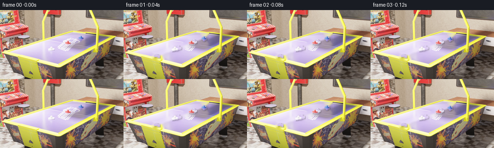
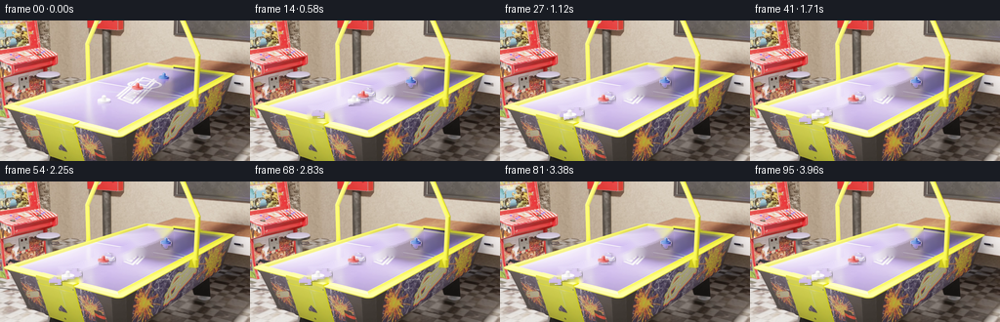

CODING AGENTS AS PIXEL WORLD MODELS
traex/DeepSeek-V4.1-Flash · pcve_0000
点击播放 · 原生 RGB 像素
编辑前的完整原视频
上方为编辑结果；原视频是模型获准使用的输入。下方为逐轮保存的编辑候选。
逐轮保存的候选
回放视频、检查图与代码变化。
每份候选均可单独播放。实际图片检查记录在下方工具轨迹中。
候选 01播放与检查图
点击播放 · 原生 RGB 像素


展开代码变化
--- 上一保存版本
+++ 本次保存版本
@@ -0,0 +1,204 @@
+from pathlib import Path
+
+import cv2
+import numpy as np
+
+import artifact_io
+
+
+CASE_DIR = Path(__file__).resolve().parent
+FRAME_COUNT = 96
+HEIGHT = 144
+WIDTH = 256
+
+
+def load_sprites(source):
+ """Recover the four rigid foreground sprites from the clean first frame."""
+ frame = source[0]
+ background = np.median(source.astype(np.float32), axis=0)
+ foreground = (
+ np.max(np.abs(frame.astype(np.float32) - background), axis=2) > 10
+ ).astype(np.uint8)
+
+ component_count, labels, stats, _ = cv2.connectedComponentsWithStats(
+ foreground, 8
+ )
+ components = []
+ for label in range(1, component_count):
+ area = int(stats[label, cv2.CC_STAT_AREA])
+ if area < 50:
+ continue
+ x0 = int(stats[label, cv2.CC_STAT_LEFT])
+ y0 = int(stats[label, cv2.CC_STAT_TOP])
+ x1 = x0 + int(stats[label, cv2.CC_STAT_WIDTH])
+ y1 = y0 + int(stats[label, cv2.CC_STAT_HEIGHT])
+ mask = labels[y0:y1, x0:x1] == label
+ components.append(
+ {
+ "center": (0.5 * (x0 + x1 - 1), 0.5 * (y0 + y1 - 1)),
+ "x0": x0,
+ "y0": y0,
+ "mask": mask,
+ "rgb": frame[y0:y1, x0:x1].copy(),
+ }
+ )
+
+ # Left-to-right ordering follows the collision chain: mallet, pink block,
+ # pale domino, then the final small object.
+ components.sort(key=lambda item: item["center"][0])
+ names = ("D", "C", "B", "A")
+ return {name: item for name, item in zip(names, components)}
+
+
+def make_plate(source, sprites):
+ """Build a clean static plate by removing all foreground footprints."""
+ background = np.median(source.astype(np.float32), axis=0)
+ footprint = np.zeros((HEIGHT, WIDTH), dtype=np.uint8)
+ for sprite in sprites.values():
+ x0 = sprite["x0"] - 2
+ y0 = sprite["y0"] - 2
+ h, w = sprite["mask"].shape
+ x1 = x0 + w + 4
+ y1 = y0 + h + 4
+ footprint[max(0, y0):min(HEIGHT, y1), max(0, x0):min(WIDTH, x1)] = 255
+
+ # Include every source location occupied during the collision.
+ moving_region = np.max(np.abs(source.astype(np.float32) - background), axis=3) > 10
+ active = moving_region.any(axis=0)
+ footprint[active] = 255
+ footprint = cv2.dilate(footprint, np.ones((5, 5), np.uint8), iterations=1)
+ return cv2.inpaint(
+ np.clip(background, 0, 255).astype(np.uint8), footprint, 4, cv2.INPAINT_TELEA
+ )
+
+
+def alpha_sprite(sprite):
+ """Soften only the sprite boundary while retaining its source detail."""
+ mask = sprite["mask"].astype(np.float32)
+ alpha = cv2.GaussianBlur(mask, (3, 3), 0.55)
+ alpha = np.maximum(alpha, mask * 0.82)
+ return sprite["rgb"].astype(np.float32), np.clip(alpha, 0, 1)
+
+
+def shadow_offsets(mask):
+ """A compact soft contact shadow that follows the source light direction."""
+ alpha = cv2.GaussianBlur(mask.astype(np.float32), (0, 0), 1.5)
+ return np.clip(alpha * 0.32, 0, 0.32)
+
+
+def paste(canvas, sprite, x, y):
+ rgb, alpha = sprite["rgb"], sprite["alpha"]
+ h, w = alpha.shape
+ ix, iy = int(round(x)), int(round(y))
+ if ix < 0 or iy < 0 or ix + w > WIDTH or iy + h > HEIGHT:
+ return
+
+ shade = sprite["shadow"]
+ sx, sy = ix + 1, iy + 1
+ sh, sw = shade.shape
+ if sx + sw <= WIDTH and sy + sh <= HEIGHT:
+ region = canvas[sy : sy + sh, sx : sx + sw]
+ region *= (1.0 - shade[..., None])
+
+ region = canvas[iy : iy + h, ix : ix + w]
+ a = alpha[..., None]
+ region *= 1.0 - a
+ region += rgb * a
+
+
+def ease_out(t):
+ t = np.clip(t, 0.0, 1.0)
+ return 1.0 - (1.0 - t) ** 2
+
+
+def position_curves():
+ """Counterfactual object tracks in pixels relative to source frame zero."""
+ # Original incoming trajectory is preserved exactly through contact at f8.
+ approach = np.array(
+ [
+ (0.0, 0.0),
+ (-1.0, 0.8),
+ (-2.0, 1.3),
+ (-3.2, 1.7),
+ (-4.4, 2.2),
+ (-5.5, 2.7),
+ (-6.6, 3.1),
+ (-7.6, 3.6),
+ (-8.6, 4.0),
+ ]
+ )
+
+ a = np.zeros((FRAME_COUNT, 2), dtype=np.float64)
+ a[:9] = approach
+ # The heavier mallet keeps much more forward momentum after impact.
+ a[9:] = approach[-1] + np.array((10.5, 0.0)) * np.array(
+ [(1.0 - np.exp(-0.115 * (f - 8))) for f in range(9, FRAME_COUNT)]
+ )[:, None]
+
+ b = np.zeros((FRAME_COUNT, 2), dtype=np.float64)
+ b[:8] = (0.0, 0.0)
+ # A 4:1 mass ratio gives the target about 1.6 times its original transfer.
+ # Contact with C therefore occurs around frame 17 rather than frame 24.
+ b[8:] = np.array((-35.0, 11.5)) * np.array(
+ [ease_out((f - 8) / 13.0) for f in range(8, FRAME_COUNT)]
+ )[:, None]
+
+ c = np.zeros((FRAME_COUNT, 2), dtype=np.float64)
+ c[:16] = (0.0, 0.0)
+ c[16:] = np.array((-37.0, 15.5)) * np.array(
+ [ease_out((f - 16) / 14.0) for f in range(16, FRAME_COUNT)]
+ )[:, None]
+
+ d = np.zeros((FRAME_COUNT, 2), dtype=np.float64)
+ d[:26] = (0.0, 0.0)
+ # Stronger downstream impact sends the final object farther left/down.
+ d[26:] = np.array((-13.5, 6.0)) * np.array(
+ [ease_out((f - 26) / 13.0) for f in range(26, FRAME_COUNT)]
+ )[:, None]
+
+ return {"A": a, "B": b, "C": c, "D": d}
+
+
+def build_video():
+ source = np.load(CASE_DIR / "source_pixels.npz")["rgb"]
+ sprites = load_sprites(source)
+ plate = make_plate(source, sprites)
+ tracks = position_curves()
+
+ animated = {}
+ for name, sprite in sprites.items():
+ rgb, alpha = alpha_sprite(sprite)
+ animated[name] = {
+ "rgb": rgb,
+ "alpha": alpha,
+ "shadow": shadow_offsets(sprite["mask"]),
+ }
+
+ # Draw order reproduces the original contact chain while preserving the
+ # intended foreground overlaps at each collision.
+ draw_order = ("D", "C", "B", "A")
+ frames = np.empty((FRAME_COUNT, HEIGHT, WIDTH, 3), dtype=np.uint8)
+ for frame_index in range(FRAME_COUNT):
+ canvas = plate.astype(np.float32)
+ for name in draw_order:
+ sprite = sprites[name]
+ x = sprite["x0"] + tracks[name][frame_index, 0]
+ y = sprite["y0"] + tracks[name][frame_index, 1]
+ paste(canvas, animated[name], x, y)
+ frames[frame_index] = np.clip(np.rint(canvas), 0, 255).astype(np.uint8)
+
+ # Frame zero is the factual anchor and must remain byte-identical.
+ frames[0] = source[0]
+ return frames
+
+
+def main():
+ frames = build_video()
+ assert frames.shape == (96, 144, 256, 3), frames.shape
+ assert frames.dtype == np.uint8
+ artifact_io.save(frames, CASE_DIR)
+ print(f"saved {frames.shape} candidate to {CASE_DIR}")
+
+
+if __name__ == "__main__":
+ main()
候选 02播放与检查图
点击播放 · 原生 RGB 像素

展开代码变化
--- 上一保存版本
+++ 本次保存版本
@@ -52,24 +52,18 @@
def make_plate(source, sprites):
"""Build a clean static plate by removing all foreground footprints."""
- background = np.median(source.astype(np.float32), axis=0)
footprint = np.zeros((HEIGHT, WIDTH), dtype=np.uint8)
for sprite in sprites.values():
- x0 = sprite["x0"] - 2
- y0 = sprite["y0"] - 2
+ x0 = sprite["x0"]
+ y0 = sprite["y0"]
h, w = sprite["mask"].shape
- x1 = x0 + w + 4
- y1 = y0 + h + 4
- footprint[max(0, y0):min(HEIGHT, y1), max(0, x0):min(WIDTH, x1)] = 255
+ footprint[y0 : y0 + h, x0 : x0 + w] |= sprite["mask"].astype(np.uint8) * 255
- # Include every source location occupied during the collision.
- moving_region = np.max(np.abs(source.astype(np.float32) - background), axis=3) > 10
- active = moving_region.any(axis=0)
- footprint[active] = 255
- footprint = cv2.dilate(footprint, np.ones((5, 5), np.uint8), iterations=1)
- return cv2.inpaint(
- np.clip(background, 0, 255).astype(np.uint8), footprint, 4, cv2.INPAINT_TELEA
- )
+ # Frame zero is otherwise a clean view of the scene. Inpainting only the
+ # small object footprints avoids contaminating the plate with settled
+ # foreground pixels from the temporal median.
+ footprint = cv2.dilate(footprint, np.ones((3, 3), np.uint8), iterations=1)
+ return cv2.inpaint(source[0], footprint, 3, cv2.INPAINT_TELEA)
def alpha_sprite(sprite):
@@ -83,7 +77,7 @@
def shadow_offsets(mask):
"""A compact soft contact shadow that follows the source light direction."""
alpha = cv2.GaussianBlur(mask.astype(np.float32), (0, 0), 1.5)
- return np.clip(alpha * 0.32, 0, 0.32)
+ return np.clip(alpha * 0.10, 0, 0.10)
def paste(canvas, sprite, x, y):
候选 03播放与检查图
可观测工具轨迹
实际执行的命令与返回图片。
命令 1exit 0
/bin/bash -c "pwd && rg --files -g 'prompt.txt' -g 'GENERATION_RULES.md' -g '"'!*.mp4'"' -g '"'!*.mov'"' -g '"'!*.mkv'"' | sort"
命令 2exit 0
/bin/bash -c 'ls -la'
命令 3exit 0
/bin/bash -c "find . -maxdepth 3 -type f | sed 's#"'^./##'"' | sort | head -200"
命令 4exit 0
/bin/bash -c 'cat prompt.txt'
命令 5exit 0
/bin/bash -c 'cat GENERATION_RULES.md'
命令 6exit 0
/bin/bash -c 'cat source_info.json'
命令 7exit 0
/bin/bash -c "cat task_spec.json && sed -n '1,260p' artifact_io.py"
命令 8exit 1
/bin/bash -c "python - <<'PY'
import numpy as np
z=np.load('source_pixels.npz')['pixels']
print(z.shape,z.dtype)
# packed RGB transpose H,W,T; unpack
rgb=np.stack([(z>>16)&255,(z>>8)&255,z&255],axis=-1)
print(rgb.shape,rgb.min(),rgb.max())
for t in [0,1,2,5,10,20,30,40,50,60,70,80,90,95]:
f=rgb[t]
cols,counts=np.unique(f.reshape(-1,3),axis=0,return_counts=True)
ii=np.argsort(counts)[-12:][::-1]
print('\\nt',t,'mean',f.mean((0,1)),'ncolors',len(cols))
print([(tuple(cols[i]),int(counts[i])) for i in ii])
PY"命令 9exit 0
/bin/bash -c "python - <<'PY'
import numpy as np
z=np.load('source_pixels.npz')
print(z.files)
for k in z.files:
a=z[k]
print(k,a.shape,a.dtype)
PY"命令 10exit 0
/bin/bash -c "python - <<'PY'
import numpy as np
f=np.load('source_pixels.npz')['rgb']
for t in [0,1,2,5,10,20,30,40,50,60,70,80,90,95]:
a=f[t]
cols,counts=np.unique(a.reshape(-1,3),axis=0,return_counts=True)
ii=np.argsort(counts)[-14:][::-1]
print('\\nt',t,'mean',a.mean((0,1)).round(1),'ncolors',len(cols))
print([(tuple(cols[i]),int(counts[i])) for i in ii])
PY"命令 11exit 0
/bin/bash -c "python - <<'PY' mods=['cv2','scipy','skimage','imageio','matplotlib'] for m in mods: try: x=__import__(m); print(m, getattr(x,'__version__','ok')) except Exception as e: print(m,'NO',e) PY"
命令 12exit 0
/bin/bash -c "python - <<'PY'
import numpy as np, cv2
f=np.load('source_pixels.npz')['rgb']
hsv=np.stack([cv2.cvtColor(x,cv2.COLOR_RGB2HSV) for x in f])
for t in [0,1,5,10,20,30,40,50,60,70,80,90,95]:
h=hsv[t]
# hue bins for sat>100 val>50
m=(h[:,:,1]>120)&(h[:,:,2]>60)
hh=h[:,:,0][m]
print('t',t,'satpix',m.sum())
for lo,hi,name in [(0,8,'red'),(8,22,'orange'),(22,38,'yellow'),(38,85,'green'),(85,125,'blue'),(125,170,'purple'),(170,180,'red2')]:
mm=m&(h[:,:,0]>=lo)&(h[:,:,0]<hi)
ys,xs=np.where(mm)
if len(xs): print(' ',name,len(xs),'bbox',xs.min(),ys.min(),xs.max(),ys.max())
PY"命令 13exit 0
/bin/bash -c "python - <<'PY'
from PIL import Image
im=Image.open('source_inspection.png')
print(im.size)
im.crop((0,0,im.width,im.height)).save('.tmp/inspection_view.png')
PY"命令 14exit 0
/bin/bash -c "python - <<'PY'
import numpy as np, cv2
f=np.load('source_pixels.npz')['rgb'].astype(np.float32)
bg=np.median(f,axis=0)
d=np.abs(f-bg).max(-1)
print('bg shape')
for t in range(96):
m=d[t]>20
if m.sum()>10:
ys,xs=np.where(m)
# cc
n,lab,stats,cents=cv2.connectedComponentsWithStats(m.astype(np.uint8),8)
comps=[]
for i in range(1,n):
x,y,w,h,a=stats[i]
if a>=8: comps.append((a,x,y,w,h,tuple(np.round(cents[i],1))))
comps=sorted(comps,reverse=True)[:8]
print(t,m.sum(),comps)
PY"命令 15exit 0
/bin/bash -c "python - <<'PY'
from PIL import Image
f=[]
for i in [0,8,16,24,32,40,48,56,64,72,80,88,95]:
im=Image.open(f'frames/{i:02d}.png') if __import__('os').path.exists(f'frames/{i:02d}.png') else None
print(i,im)
PY"命令 16exit 0
/bin/bash -c "python - <<'PY'
import numpy as np,cv2
f=np.load('source_pixels.npz')['rgb']
# blocks 4x4, select median, print hue classes
for t in [0,8,16,24,32,40,48,56,64,72,80,95]:
a=f[t]
b=a[:144,:256].reshape(36,4,64,4,3).mean((1,3))
hsv=cv2.cvtColor(b.astype(np.uint8),cv2.COLOR_RGB2HSV)
# background around 217,206,189; classify
chars=[]
for y in range(36):
row=''
for x in range(64):
r,g,bb=b[y,x]; h,s,v=hsv[y,x]
if s<25:
if v>220:c=' '
elif v>190:c='.'
elif v>150:c=':'
elif v>100:c='-'
else:c='#'
elif h<7 or h>=173:c='R'
elif h<20:c='O'
elif h<35:c='Y'
elif h<85:c='G'
elif h<125:c='B'
elif h<160:c='P'
else:c='M'
row+=c
chars.append(row)
print('\\n=== frame',t,'===')
print('\\n'.join(chars))
PY"命令 17exit 0
/bin/bash -c "python - <<'PY'
import numpy as np,cv2
f=np.load('source_pixels.npz')['rgb'].astype(np.float32)
bg=np.median(f,axis=0)
for t in range(0,33):
d=np.abs(f[t]-bg).max(-1)
m=d>18
n,lab,stats,cents=cv2.connectedComponentsWithStats(m.astype(np.uint8),8)
comps=[]
for i in range(1,n):
x,y,w,h,a=stats[i]
if a<8: continue
mask=lab==i
mean=f[t][mask].mean(0).round(0).astype(int)
comps.append((a,(x,y,w,h),tuple(mean),tuple(np.round(cents[i],1))))
print(t,sorted(comps,reverse=True)[:6])
PY"命令 18exit 0
/bin/bash -c "python - <<'PY'
import numpy as np, cv2
from PIL import Image,ImageDraw
f=np.load('source_pixels.npz')['rgb']
# create 4 crops enlarged 4x for selected frames
sel=[0,8,16,24,32,40,48,60,72,95]
sheet=Image.new('RGB',(256*5,144*2),(0,0,0))
for j,t in enumerate(sel):
im=Image.fromarray(f[t]).resize((256,144),Image.Resampling.NEAREST)
sheet.paste(im,((j%5)*256,(j//5)*144))
sheet.resize((1280,576),Image.Resampling.NEAREST).save('.tmp/motion_sheet.png')
# diff masks around object
for t in [0,1,8,16,23,24,25,30,40,50,60,70,80,90,95]:
print(t)
# avg positions red hue
hsv=cv2.cvtColor(f[t],cv2.COLOR_RGB2HSV)
red=((hsv[:,:,0]<8)|(hsv[:,:,0]>172))&(hsv[:,:,1]>100)&(hsv[:,:,2]>80)
blue=(hsv[:,:,0]>95)&(hsv[:,:,0]<135)&(hsv[:,:,1]>70)&(hsv[:,:,2]>80)
for nm,m in [('red',red),('blue',blue)]:
ys,xs=np.where(m)
print(nm,len(xs), (xs.min(),ys.min(),xs.max(),ys.max()) if len(xs) else None)
PY"命令 19exit 0
/bin/bash -c "python - <<'PY'
import numpy as np, cv2
f=np.load('source_pixels.npz')['rgb'].astype(np.float32)
bg=np.median(f,axis=0)
for t in range(96):
d=np.abs(f[t]-bg).max(-1)
m=d>18
# known static-ish blobs are around y74-84, y61-71, y53-64, y91-100; list centroid change components in region x40..240,y45..110 excluding first four known
n,lab,stats,cents=cv2.connectedComponentsWithStats(m.astype(np.uint8),8)
comps=[]
for i in range(1,n):
x,y,w,h,a=stats[i]
if a>=5 and y<115 and y+h>45:
comps.append((int(a),int(x),int(y),int(w),int(h),tuple(np.round(cents[i],1))))
print(f'{t:02d}',sorted(comps,reverse=True)[:6])
PY"命令 20exit 0
/bin/bash -c "python - <<'PY'
import numpy as np, cv2
f=np.load('source_pixels.npz')['rgb'].astype(np.float32)
bg=np.median(f,axis=0)
# Make all-frame mask summary by compare each frame to bg and output changed bbox count by row/col for early frames
for t in range(0,50):
d=np.abs(f[t]-bg).max(-1)
m=d>18
# mask in scene center only x50:245 y45:110, exclude 4 fixed weird known positions by rectangle? print bbox per connected component around y<115
n,lab,stats,cents=cv2.connectedComponentsWithStats(m.astype(np.uint8),8)
out=[]
for i in range(1,n):
x,y,w,h,a=stats[i]
if a<5:continue
# exclude static small markers around x63 and x100
out.append((int(x),int(y),int(w),int(h),int(a)))
print(t,out)
PY"命令 21exit 0
/bin/bash -c "python - <<'PY'
import numpy as np, cv2
f=np.load('source_pixels.npz')['rgb']
# print exact color regions for main moving objects at t0, in a spatial grid
for t in [0,8,16,24,32,40]:
a=f[t]
print('\\nT',t)
# characterize each moving connected region's median and hue with tight masks from known positions
for nm,(x0,y0,x1,y1) in [('redmallet',(95,65,125,90)),('pink1',(130,55,158,75)),('blue',(155,48,178,68)),('farleft',(60,88,80,103))]:
crop=a[y0:y1,x0:x1]
print(nm,'bboxmean',crop.mean((0,1)).round(),'colors')
cols,cnt=np.unique(crop.reshape(-1,3),axis=0,return_counts=True)
ii=np.argsort(cnt)[-5:][::-1]
print([(tuple(cols[i]),int(cnt[i])) for i in ii])
PY"命令 22exit 0
/bin/bash -c "python - <<'PY'
import numpy as np,cv2
f=np.load('source_pixels.npz')['rgb'].astype(np.float32)
bg=np.median(f,axis=0)
for t in range(96):
d=np.abs(f[t]-bg).max(-1)
m=(d>18).astype(np.uint8)
n,lab,stats,cents=cv2.connectedComponentsWithStats(m,8)
# print bounding boxes and dominant colors for components with area 20+ in frame region y>40, excluding background texture changes
comps=[]
for i in range(1,n):
x,y,w,h,a=stats[i]
if a>=15 and 40<y<130 and 40<x<245:
vals=f[t][lab==i]
mean=vals.mean(0)
comps.append((int(a),int(x),int(y),int(w),int(h),tuple(mean.astype(int))))
print(f'{t:02d}', sorted(comps,reverse=True)[:8])
PY"命令 23exit 0
/bin/bash -c "python - <<'PY'
import numpy as np,cv2
f=np.load('source_pixels.npz')['rgb'].astype(np.float32)
bg=np.median(f,axis=0)
# Extract motion through alpha-like mask and estimate optical flow. Try foreground mask based on distance to bg but limit changed pixels >10
for t0,t1 in [(0,8),(8,16),(16,24),(24,32),(32,40),(40,48),(48,60),(60,72),(72,84),(84,95)]:
a=f[t0].astype(np.uint8); b=f[t1].astype(np.uint8)
g1=cv2.cvtColor(a,cv2.COLOR_RGB2GRAY); g2=cv2.cvtColor(b,cv2.COLOR_RGB2GRAY)
# whole frame but use median flow of bottom? pyrLK selected changes
pts=cv2.goodFeaturesToTrack(g1,100,0.01,3)
if pts is not None:
p2,st,err=cv2.calcOpticalFlowPyrLK(g1,g2,pts,None,winSize=(15,15),maxLevel=2)
good=st.ravel()==1
q1=pts[good,0]; q2=p2[good,0]
d=q2-q1
# only pts in central object region
sel=(q1[:,1]>40)&(q1[:,1]<110)&(q1[:,0]>40)&(q1[:,0]<240)
print(t0,t1,'n',sel.sum(),'median',np.median(d[sel],axis=0) if sel.sum() else None)
# components of displacement positions
PY"命令 24exit 0
/bin/bash -c "python - <<'PY'
import numpy as np
f=np.load('source_pixels.npz')['rgb']
bg=np.median(f.astype(np.float32),axis=0).round().astype(np.uint8)
# bbox around each object and distance from bg; use median patch composite
for t in [0,8,16,24,32,40,48,60,72,95]:
d=np.abs(f[t].astype(float)-bg).max(-1)
print(t, 'global diff',np.percentile(d,[50,90,95,99,99.9]), 'max',d.max())
# rows diff distribution in x 50..240
print(' rows', [(y,int((d[y,50:240]>20).sum())) for y in range(45,105) if (d[y,50:240]>20).sum()>15])
PY"命令 25exit 0
/bin/bash -c "python - <<'PY'
import numpy as np,cv2
f=np.load('source_pixels.npz')['rgb'].astype(np.float32)
bg=np.median(f,axis=0)
for t in [0,1,2,8,16,24,25,30,32,40,42,43,44,45,46,47,48,49,50,52,55,58,60,61,62,63,64,65,66,67,68,69,70,71,72,73,74,75,76,77,78,79,80,82,84,86,88,90,92,94,95]:
d=np.abs(f[t]-bg).max(-1)
# local exact raw patches for visually interesting
print(t, 'n>15',int((d>15).sum()),'n>40',int((d>40).sum()),'n>80',int((d>80).sum()))
PY"命令 26exit 0
/bin/bash -c "python - <<'PY'
from PIL import Image
import numpy as np, cv2
f=np.load('source_pixels.npz')['rgb']
# inspect full first frame upscale and object positions using nearest. We can output ascii edges maybe.
# Save 8x crop around x50..190 y45..105 for selected frames
for t in [0,8,16,24,30,36,42,48,60,72,84,95]:
Image.fromarray(f[t]).resize((2048,1152),Image.Resampling.NEAREST).save(f'.tmp/f{t:02d}.png')
print('saved')
PY"命令 27exit 0
/bin/bash -c "python - <<'PY'
import numpy as np,cv2
f=np.load('source_pixels.npz')['rgb'].astype(np.float32)
bg=np.median(f,axis=0)
# RGB and difference patch at t0: sample in blocks 4x4 around objects
for t in [0,8,16,24,32,42,48,60,72,95]:
print('\\n===',t,'===')
d=np.abs(f[t]-bg).max(-1)
# print occupancy coarse in area x50:200,y50:105 at 2px res threshold15
for y in range(48,104,2):
row=''
for x in range(50,202,2):
q=d[y:y+2,x:x+2]
row += '#' if q.max()>60 else ('+' if q.max()>25 else ('.' if q.max()>10 else ' '))
print(f'{y:03d} '+row)
PY"命令 28exit 0
/bin/bash -c "python - <<'PY'
import numpy as np, cv2
f=np.load('source_pixels.npz')['rgb']
bg=np.median(f.astype(np.float32),axis=0)
for t in [0,8,16,24,30,40,48,60,80,95]:
a=f[t].astype(np.float32); d=np.abs(a-bg).max(-1)
hsv=cv2.cvtColor(f[t],cv2.COLOR_RGB2HSV)
print('\\n=== FRAME',t,'===')
for y in range(48,104):
row=''
for x in range(50,205):
if d[y,x]<=12: row+=' '
else:
h,s,v=hsv[y,x]
if s<35:
c='W' if v>210 else ('w' if v>170 else 'g')
elif h<8 or h>172: c='R'
elif h<22: c='O'
elif h<36: c='Y'
elif h<80:c='G'
elif h<125:c='B'
elif h<165:c='P'
else:c='M'
if d[y,x]>100: c=c.upper()
elif d[y,x]>50: c=c
else: c=c.lower()
row+=c
print(row.rstrip())
PY"命令 29exit 0
/bin/bash -c "python - <<'PY'
import numpy as np
f=np.load('source_pixels.npz')['rgb']
for t in [0,8,16,24,32,40,48,60,95]:
a=f[t]
print('\\n====',t,'====')
for y in range(48,105):
row=''
for x in range(50,190):
r,g,b=map(int,a[y,x])
# map deviations from likely bg (217,206,189)
if abs(r-217)<10 and abs(g-206)<10 and abs(b-189)<10: c=' '
elif b>r+10 and b>g+10: c='B'
elif r>g+25 and b>g+10: c='P' # purple/magenta
elif r>g+25 and g>b+20: c='R'
elif r>g+10 and g>b+5: c='O'
elif g>r+10 and g>b+10: c='G'
elif r<140 and g<140 and b<140: c='#'
elif r>230 and g>230 and b>230: c='W'
else: c='.'
row+=c
print(row.rstrip())
PY"命令 30exit 0
/bin/bash -c "python - <<'PY'
import numpy as np,cv2
f=np.load('source_pixels.npz')['rgb'].astype(np.float32)
bg=np.median(f,axis=0)
# For each frame find foreground pixels > threshold and connected comps after mask cleanup, output all areas and centroids.
for t in range(0,48):
d=np.abs(f[t]-bg).max(-1)
m=(d>15).astype(np.uint8)
# remove border stuff not relevant and static tiny comps <10
n,lab,stats,cents=cv2.connectedComponentsWithStats(m,8)
comps=[]
for i in range(1,n):
x,y,w,h,a=stats[i]
if a<12:continue
comps.append((int(a),int(x),int(y),int(w),int(h),tuple(np.round(cents[i],1))))
print(t,sorted(comps,reverse=True))
PY"命令 31exit 0
/bin/bash -c "python - <<'PY'
import numpy as np
f=np.load('source_pixels.npz')['rgb'].astype(np.float32)
# list where red pixels are concentrated by region t0; print HSV stats for pixels around candidate objects
for t in [0,8,16,24,30,40,48]:
a=f[t]
print('\\nT',t)
for nm,(x0,y0,x1,y1) in [('objA',(155,50,180,70)),('objB',(130,55,158,76)),('objC',(96,70,125,89)),('floor',(50,85,140,105))]:
p=a[y0:y1,x0:x1].reshape(-1,3)
# pixels not bg-ish
d=np.abs(p-np.array([217,206,189])).max(1)
q=p[d>20]
print(nm,len(q),'mean',q.mean(0).round() if len(q) else None,'pct',np.percentile(q,[10,50,90],axis=0).round() if len(q) else None)
PY"命令 32exit 0
/bin/bash -c "python - <<'PY'
import numpy as np,cv2
f=np.load('source_pixels.npz')['rgb']
# produce frame difference images and save contrast-boosted sheet
bg=np.median(f.astype(np.float32),axis=0)
rows=[]
for t in range(0,96):
d=np.abs(f[t].astype(np.float32)-bg).max(-1)
v=np.clip(d*4,0,255).astype(np.uint8)
rows.append(v)
# sheet 12x8
sheet=np.zeros((144*8,256*12),np.uint8)
for t,v in enumerate(rows): sheet[(t//12)*144:(t//12+1)*144,(t%12)*256:(t%12+1)*256]=v
cv2.imwrite('.tmp/diff_sheet.png',sheet)
print('saved diff')
PY"命令 33exit 0
/bin/bash -c "python - <<'PY'
import numpy as np
f=np.load('source_pixels.npz')['rgb']
bg=np.median(f.astype(np.float32),axis=0)
# for object C at t0, background-clean RGBA and size
for name,(x0,y0,x1,y1) in [('A',(158,49,177,67)),('B',(132,57,158,75)),('C',(96,70,126,89)),('D',(60,88,80,103))]:
print('\\n',name)
for t in [0,8,16,24,30,32,40,48,60,80,95]:
a=f[t,y0:y1,x0:x1].astype(float); b=bg[y0:y1,x0:x1]
d=np.abs(a-b).max(-1)
# changed pixels mean of a, and count
q=a[d>15]
print(t,'n',len(q),'mean',q.mean(0).round(0) if len(q) else None)
PY"命令 34exit 0
/bin/bash -c "python - <<'PY'
import numpy as np
f=np.load('source_pixels.npz')['rgb']
bg=np.median(f.astype(np.float32),axis=0).round().astype(np.uint8)
for name,(x0,y0,x1,y1) in [('A',(158,49,177,67)),('B',(132,57,158,75)),('C',(96,70,126,89)),('D',(60,88,80,103))]:
print('\\n===',name,'===')
for y in range(y0,y1):
row=''
for x in range(x0,x1):
d=np.abs(f[0,y,x].astype(int)-bg[y,x].astype(int)).max()
if d<=8:c=' '
elif d<=25:c='.'
else:
r,g,b=f[0,y,x]
if r>g+20 and b>g+10:c='P'
elif r>g+20 and g>b+15:c='R'
elif b>r+15:c='B'
elif r>230 and g>225 and b>225:c='W'
elif r<170:c='#'
else:c='o'
row+=c
print(row)
PY"命令 35exit 0
/bin/bash -c "python - <<'PY'
import numpy as np,cv2
f=np.load('source_pixels.npz')['rgb'].astype(np.float32)
bg=np.median(f,axis=0)
for t in range(0,96):
d=np.abs(f[t]-bg).max(-1)
m=(d>15).astype(np.uint8)
n,lab,stats,cents=cv2.connectedComponentsWithStats(m,8)
arr=[]
for i in range(1,n):
x,y,w,h,a=stats[i]
if a>=20 and x>40 and x<245 and y>40 and y<130:
vals=f[t][lab==i]
arr.append((int(a),int(x),int(y),int(w),int(h),tuple(vals.mean(0).round().astype(int))))
print(f'{t:02d}',sorted(arr,reverse=True)[:10])
PY"命令 36exit 0
/bin/bash -c "python - <<'PY'
import numpy as np,cv2
f=np.load('source_pixels.npz')['rgb']
# print image as grayscale ascii for frame 0 area x0..256 y0..144 at 2x2, using color labels manually
bg=np.median(f.astype(np.float32),axis=0)
for t in [0]:
a=f[t].astype(np.float32); d=np.abs(a-bg).max(-1)
for y in range(0,144,2):
row=''
for x in range(0,256,2):
q=a[y:y+2,x:x+2].reshape(-1,3).mean(0)
dd=d[y:y+2,x:x+2].max()
r,g,b=q
if dd<8: c=' '
elif b>r+15:c='B'
elif r>g+25 and b>g+10:c='P'
elif r>g+25 and g>b+15:c='R'
elif g>r+10:c='G'
elif r>g+10 and g>b+5:c='O'
elif r<160:c='#'
elif r>230 and g>230 and b>230:c='W'
else:c='.'
row+=c
print(row.rstrip())
PY"命令 37exit 0
/bin/bash -c "python - <<'PY'
import numpy as np
f=np.load('source_pixels.npz')['rgb']
# print per-frame difference between consecutive frames count/bbox to determine object speed
for t in range(1,96):
d=np.abs(f[t].astype(int)-f[t-1].astype(int)).max(-1)
ys,xs=np.where(d>15)
print(t,len(xs),(xs.min(),ys.min(),xs.max(),ys.max()) if len(xs) else None)
PY"命令 38exit 0
/bin/bash -c "python - <<'PY'
import numpy as np
f=np.load('source_pixels.npz')['rgb'].astype(np.int16)
# object colors t0 mean masks
colors={'A':np.array([132,146,211]),'B':np.array([227,174,185]),'C':np.array([232,223,243]),'D':np.array([210,192,236])}
for t in [0,4,8,12,14,15,16,20,24,28,30,32,36,40,44,48,60,80,95]:
print('\\nT',t)
for k,c in colors.items():
d=np.abs(f[t]-c).max(-1)
m=d<20
ys,xs=np.where(m)
# remove border and print bbox/count
sel=(xs>35)&(xs<250)&(ys>35)&(ys<130)
xs=xs[sel];ys=ys[sel]
print(k,len(xs),(xs.min(),ys.min(),xs.max(),ys.max()) if len(xs) else None, 'cent', (xs.mean().round(1),ys.mean().round(1)) if len(xs) else None)
PY"命令 39exit 0
/bin/bash -c "python - <<'PY'
import numpy as np
f=np.load('source_pixels.npz')['rgb'].astype(np.int16)
for t in [0,8,16,24,32,40,48,60,80,95]:
a=f[t]
for desc,m in [
('red',(a[:,:,0]>a[:,:,1]+20)&(a[:,:,0]>a[:,:,2]+20)),
('blue',(a[:,:,2]>a[:,:,0]+20)&(a[:,:,2]>a[:,:,1]+20)),
('green',(a[:,:,1]>a[:,:,0]+20)&(a[:,:,1]>a[:,:,2]+20)),
('dark',a.max(2)<100),
('white',a.min(2)>245)]:
ys,xs=np.where(m)
print(t,desc,len(xs),(xs.min(),ys.min(),xs.max(),ys.max()) if len(xs) else None)
PY"命令 40exit 0
/bin/bash -c "python - <<'PY'
import numpy as np,cv2
f=np.load('source_pixels.npz')['rgb'].astype(np.float32)
bg=np.median(f,axis=0)
# gather foreground pixels for frames 0..30 around center
pts=[]
for t in range(0,31):
d=np.abs(f[t]-bg).max(-1)
m=d>18
m[:40]=False;m[115:]=False;m[:,:45]=False;m[:,230:]=False
pts.append(f[t][m])
pts=np.concatenate(pts)
print('pts',pts.shape)
# kmeans 8
crit=(cv2.TERM_CRITERIA_EPS+cv2.TERM_CRITERIA_MAX_ITER,100,0.2)
compact,labels,centers=cv2.kmeans(pts,10,None,crit,20,cv2.KMEANS_PP_CENTERS)
print('centers')
for i,c in sorted(enumerate(centers),key=lambda x:x[1].sum()):print(i,c.round().astype(int))
# assign each frame mask char
chars='0123456789'
for t in [0,8,16,24,30,40]:
a=f[t];d=np.abs(a-bg).max(-1)
m=(d>18)&(np.indices(d.shape)[0]>=40)&(np.indices(d.shape)[0]<110)&(np.indices(d.shape)[1]>=50)&(np.indices(d.shape)[1]<190)
print('\\nFRAME',t)
for y in range(48,104):
row=''
for x in range(50,190):
if not m[y,x]:row+=' '
else:
lab=int(np.argmin(((centers-a[y,x])**2).sum(1)))
row+=chars[lab]
print(row.rstrip())
PY"命令 41exit 0
/bin/bash -c "python - <<'PY'
import numpy as np,cv2
f=np.load('source_pixels.npz')['rgb'].astype(np.int16)
for t in range(0,50):
a=f[t]
# pinkish red pixels B
r,g,b=a[:,:,0],a[:,:,1],a[:,:,2]
m=(r>g+18)&(r>b+2)&(r>120)
# central scene
m[:45]=False;m[110:]=False;m[:,:90]=False;m[:,180:]=False
n,lab,st,ce=cv2.connectedComponentsWithStats(m.astype(np.uint8),8)
comps=[]
for i in range(1,n):
x,y,w,h,ar=st[i]
if ar>=4: comps.append((ar,x,y,w,h,tuple(np.round(ce[i],1))))
print(t,sorted(comps,reverse=True)[:5])
PY"命令 42exit 0
/bin/bash -c "python - <<'PY'
from PIL import Image
im=Image.open('source_inspection.png')
print(im.size)
# it is likely 4x2 grid with 21 label strips, extract frames crop
for j in range(8):
x=(j%4)*256;y=(j//4)*165+21
im.crop((x,y,x+256,y+144)).resize((1024,576),Image.Resampling.NEAREST).save(f'.tmp/insp{j}.png')
print('ok')
PY"命令 43exit 1
/bin/bash -c "python - <<'PY'
import numpy as np
f=np.load('source_pixels.npz')['rgb']
bg=np.median(f.astype(np.float32),axis=0)
# classify pixel colors into named cluster centers based on kmeans centers from earlier plus bg
centers=np.array([[217,206,189],[84,111,189],[215,92,91],[229,131,133],[141,159,219],[238,161,165],[236,191,201],[206,191,234],[221,205,241],[237,231,240],[251,250,250]])
chars=' bBBrrRRppPPwwW'
# actually indices 0-10 chars
chars=' bBrRpPwW#' # need 11
chars=' bBrRpPwWQ'
# map nearest, print non-bg chars within area
for t in [0,4,8,12,15,16,20,23,24,28,30,31,36,40,42,44,46,48,50]:
a=f[t].astype(np.float32)
print('\\n=== T',t,'===')
for y in range(48,106):
row=''
for x in range(50,190):
d=((a[y,x]-centers)**2).sum(1)
k=int(np.argmin(d))
# background if near bg or overall diff low
if np.abs(a[y,x]-bg[y,x]).max()<=12: c=' '
else: c=' bBrRpPwWQ'[k]
row+=c
print(row.rstrip())
PY"命令 44exit 0
/bin/bash -c "python - <<'PY'
import numpy as np
f=np.load('source_pixels.npz')['rgb']
bg=np.median(f.astype(np.float32),axis=0)
centers=np.array([[217,206,189],[84,111,189],[215,92,91],[229,131,133],[141,159,219],[238,161,165],[236,191,201],[206,191,234],[221,205,241],[237,231,240],[251,250,250]])
chars=' bBrRpPwWQz'
for t in [0,8,15,16,23,24,30,31,36,40,42,44,46,48]:
a=f[t].astype(np.float32)
print('\\n=== T',t,'===')
for y in range(48,106):
row=''
for x in range(50,190):
k=int(np.argmin(((a[y,x]-centers)**2).sum(1)))
c=' ' if np.abs(a[y,x]-bg[y,x]).max()<=12 else chars[k]
row+=c
print(row.rstrip())
PY"命令 45exit 0
/bin/bash -c "python - <<'PY'
import numpy as np
f=np.load('source_pixels.npz')['rgb']
bg=np.median(f.astype(np.float32),axis=0)
# cluster labels at t0 known regions. get top 20 pixels with color near each object and their coordinates
for nm,(x0,y0,x1,y1) in [('mallet',(152,48,178,69)),('block',(130,58,158,77)),('cylinder',(95,70,127,90)),('white',(60,88,80,103))]:
a=f[0,y0:y1,x0:x1].astype(np.float32); b=bg[y0:y1,x0:x1]
d=np.abs(a-b).max(-1)
m=d>12
print('\\n',nm,'changed',m.sum())
# mean color per row, bbox
ys,xs=np.where(m)
print('bbox',xs.min()+x0,ys.min()+y0,xs.max()+x0,ys.max()+y0)
for yy in range(ys.min(),ys.max()+1):
xx=xs[ys==yy]
if len(xx): print(' y',yy+y0,'x',xx.min()+x0,xx.max()+x0,'mean',a[yy,xx].mean(0).round().astype(int))
PY"命令 46exit 0
/bin/bash -c "python - <<'PY'
import numpy as np, cv2
f=np.load('source_pixels.npz')['rgb'].astype(np.float32)
bg=np.median(f,axis=0)
# determine pixel-level sprite masks using connected components from frame0 and mean/med colors, save info to npz
# Show actual average color across changed pixels for each object over t0
regions={'mallet':(152,48,178,69),'block':(130,58,158,77),'cylinder':(95,70,127,90),'white':(60,88,80,103)}
for t in [0,8,16,24,32,40,48]:
print('T',t)
for nm,(x0,y0,x1,y1) in regions.items():
a=f[t,y0:y1,x0:x1];b=bg[y0:y1,x0:x1];d=np.abs(a-b).max(-1)
q=a[d>12]
print(nm,len(q),q.mean(0).round().astype(int) if len(q) else None)
PY"命令 47exit 0
/bin/bash -c "python - <<'PY'
import numpy as np
f=np.load('source_pixels.npz')['rgb']
# Print grayscale RGB at selected object patches as numbers to infer 3D shape
for nm,(x0,y0,x1,y1) in [('mallet',(152,49,176,69)),('block',(132,58,156,77)),('cyl',(96,70,124,91)),('white',(60,88,80,102))]:
print('\\n===',nm,'===')
a=f[0,y0:y1,x0:x1]
for y in range(a.shape[0]):
print(' '.join(f'{r:02x}{g:02x}{b:02x}' for r,g,b in a[y]))
PY"命令 48exit 0
/bin/bash -c "python - <<'PY'
import numpy as np, cv2
f=np.load('source_pixels.npz')['rgb']
bg=np.median(f.astype(np.float32),axis=0)
# Make object masks by flood comp and extract sprite frames for t0 and t40 etc. Detect known color ranges and largest components.
for t in [0,8,16,24,32,40,48]:
a=f[t]
# Use saturated object mask / changed from bg in scene and comp
d=np.abs(a.astype(float)-bg).max(-1)
m=((d>12)&(np.indices(d.shape)[0]>45)&(np.indices(d.shape)[0]<110)&(np.indices(d.shape)[1]>45)&(np.indices(d.shape)[1]<190)).astype(np.uint8)
n,lab,st,ce=cv2.connectedComponentsWithStats(m,8)
print('\\nFRAME',t)
for i in range(1,n):
x,y,w,h,ar=st[i]
if ar<20: continue
vals=a[lab==i]
print(i,'area',ar,'bbox',x,y,w,h,'mean',vals.mean(0).round().astype(int),'center',ce[i].round(1))
# bbox ascii mask
mm=lab[y:y+h,x:x+w]==i
for yy in range(h):
print(''.join('#' if mm[yy,xx] else ' ' for xx in range(w)))
PY"命令 49exit 0
/bin/bash -c "python - <<'PY'
import numpy as np
f=np.load('source_pixels.npz')['rgb']
# detect red mallet via blue hue (BGR order? RGB actually output shows blue) based average
for t in [0,4,8,12,16,20,24,28,32,36,40,44,48,60,80,95]:
a=f[t].astype(np.int16)
r,g,b=a[:,:,0],a[:,:,1],a[:,:,2]
# strong blue object
m=(b>r+30)&(b>g+20)&(g>80)&(r<200)
# central only
m[:45]=False;m[110:]=False;m[:,:120]=False;m[:,190:]=False
ys,xs=np.where(m)
print(t,len(xs),(xs.min(),ys.min(),xs.max(),ys.max()) if len(xs) else None, tuple(a[m].mean(0).round().astype(int)) if len(xs) else None)
PY"命令 50exit 0
/bin/bash -c "python - <<'PY'
import numpy as np,cv2
f=np.load('source_pixels.npz')['rgb']
bg=np.median(f.astype(np.float32),axis=0)
# identify exact objects with masks based on color components; classify every changed pixel into RGB clusters
# save masks and reconstruct object sprites from t0
masks={}
for name,(x0,y0,x1,y1) in {'A':(158,48,177,69),'B':(130,57,158,77),'C':(96,70,127,91),'D':(60,88,80,103)}.items():
a=f[0].astype(float); d=np.abs(a-bg).max(-1)
m=(d>12); m[:y0]=False;m[y1:]=False;m[:,:x0]=False;m[:,x1:]=False
# if region contains only object
masks[name]=m
ys,xs=np.where(m)
print(name,'bbox',xs.min(),ys.min(),xs.max(),ys.max(),'area',len(xs))
# color median / percentile
p=f[0][m]
print('med',np.median(p,0),'min',p.min(0),'max',p.max(0))
np.savez('.tmp/sprite_'+name+'.npz',x0=xs.min(),y0=ys.min(),x1=xs.max()+1,y1=ys.max()+1,mask=m[ys.min():ys.max()+1,xs.min():xs.max()+1],rgb=f[0,ys.min():ys.max()+1,xs.min():xs.max()+1])
PY"命令 51exit 1
/bin/bash -c "python - <<'PY'
import numpy as np, cv2
f=np.load('source_pixels.npz')['rgb'].astype(np.float32)
bg=np.median(f,axis=0)
for t in [0,8,16,24,32,40,48]:
d=np.abs(f[t]-bg).max(-1)
print('\\n===',t,'===')
# get components > 20 in central, then print each bbox with original crop coordinates and list all colors by kmeans
m=((d>12)&(np.indices(d.shape)[0]>45)&(np.indices(d.shape)[0]<110)&(np.indices(d.shape)[1]>50)&(np.indices(d.shape)[1]<190)).astype(np.uint8)
n,lab,st,ce=cv2.connectedComponentsWithStats(m,8)
for i in range(1,n):
x,y,w,h,a=st[i]
if a<20:continue
print('comp',i,'bbox',x,y,w,h,'area',a,'mean',f[t][lab==i].mean(0).round().astype(int))
# print crop in rgb hex reduced? use average color classification with actual color
# save cropped image enlarged
crop=f[t,y-2:y+h+2,x-2:x+w+2].astype(np.uint8)
Image.fromarray(crop).resize((crop.shape[1]*8,crop.shape[0]*8),Image.Resampling.NEAREST).save(f'.tmp/c{t}_{i}.png')
PY"命令 52exit 0
/bin/bash -c "python - <<'PY'
import numpy as np, cv2
from PIL import Image
f=np.load('source_pixels.npz')['rgb'].astype(np.float32)
bg=np.median(f,axis=0)
for t in [0,8,16,24,32,40,48]:
d=np.abs(f[t]-bg).max(-1)
print('\\n===',t,'===')
m=((d>12)&(np.indices(d.shape)[0]>45)&(np.indices(d.shape)[0]<110)&(np.indices(d.shape)[1]>50)&(np.indices(d.shape)[1]<190)).astype(np.uint8)
n,lab,st,ce=cv2.connectedComponentsWithStats(m,8)
for i in range(1,n):
x,y,w,h,a=st[i]
if a<20:continue
print('comp',i,'bbox',x,y,w,h,'area',a,'mean',f[t][lab==i].mean(0).round().astype(int))
crop=f[t,y-2:y+h+2,x-2:x+w+2].astype(np.uint8)
Image.fromarray(crop).resize((crop.shape[1]*8,crop.shape[0]*8),Image.Resampling.NEAREST).save(f'.tmp/c{t}_{i}.png')
PY"命令 53exit 0
/bin/bash -c "python - <<'PY'
import numpy as np,cv2
f=np.load('source_pixels.npz')['rgb'].astype(np.int16)
for t in range(0,96):
a=f[t];r,g,b=a[:,:,0],a[:,:,1],a[:,:,2]
m=(r>g+35)&(r>b+25)&(r>150)
m[:45]=False;m[110:]=False;m[:,:50]=False;m[:,190:]=False
n,lab,st,ce=cv2.connectedComponentsWithStats(m.astype(np.uint8),8)
comps=[]
for i in range(1,n):
x,y,w,h,ar=st[i]
if ar>=4:comps.append((int(ar),int(x),int(y),int(w),int(h),tuple(np.round(ce[i],1))))
print(t,sorted(comps,reverse=True)[:5])
PY"命令 54exit 0
/bin/bash -c "sed -n '1,240p' GENERATION_RULES.md"
命令 55exit 0
/bin/bash -c "sed -n '1,160p' prompt.txt"
命令 56exit 0
/bin/bash -c "sed -n '1,260p' artifact_io.py"
命令 57exit 0
/bin/bash -c "ls -la && find .tmp -maxdepth 2 -type f -printf '%p %s\\n' 2>/dev/null | sort | head -80"
命令 58exit 0
/bin/bash -c 'cat source_info.json'
命令 59exit 0
/bin/bash -c 'cat task_spec.json'
命令 60exit 0
/bin/bash -c "python - <<'PY'
import numpy as np, pathlib
for p in sorted(pathlib.Path('.tmp').glob('sprite_*.npz')):
z=np.load(p)
print(p)
for k in z.files:
a=z[k]
print(' ',k,a.shape,a.dtype, (a.min(),a.max()) if a.size else '')
PY"命令 61exit 1
/bin/bash -c "python - <<'PY'
import numpy as np
z=np.load('source_pixels.npz'); x=z['rgb']
print(x.shape,x.dtype,x.min(),x.max())
print('frame0 mean',x[0].mean((0,1)))
print('frame95 mean',x[-1].mean((0,1)))
print('unique colors frame0',len(np.unique(x[0].reshape(-1,3),axis=0)))
print('unique colors frame95',len(np.unique(x[-1].reshape(-1,3),axis=0)))
print('exact static pixels f49..95',np.mean(np.all(x[49:]==x[49:1],axis=(1,2,3))))
PY"命令 62exit 0
/bin/bash -c "python - <<'PY'
import numpy as np, cv2
x=np.load('source_pixels.npz')['rgb'].astype(np.int16)
bg=np.median(x.astype(np.float32),axis=0)
# per frame connected comps, >12 diff, ignore tiny
for fi in range(0,56,2):
d=np.max(np.abs(x[fi].astype(np.float32)-bg),axis=2)>12
n,l,st,cen=cv2.connectedComponentsWithStats(d.astype(np.uint8),8)
comps=[]
for j in range(1,n):
a=int(st[j,4])
if a>=18:
comps.append((a,tuple(round(float(v),1) for v in cen[j]),tuple(int(v) for v in st[j,:4])))
print(fi,sorted(comps,reverse=True)[:8])
PY"命令 63exit 1
/bin/bash -c "python - <<'PY'
import numpy as np
x=np.load('source_pixels.npz')['rgb']
for i in range(0,56):
d=np.max(np.abs(x[i].astype(float)-x[i-1].astype(float)),axis=2) if i else None
if i==0: print(0,'-')
else: print(i, int((d>12).sum()), float(d.max()), tuple(round(float(v),2) for v in d.mean((0,1))))
PY"命令 64exit 0
/bin/bash -c "python - <<'PY'
import numpy as np
for n in 'ABCD':
z=np.load(f'.tmp/sprite_{n}.npz')
m=z['mask']; rgb=z['rgb']; ys,xs=np.where(m)
print(n,'mask',m.sum(),'bbox local',xs.min(),ys.min(),xs.max(),ys.max(),'rgb mean',rgb[m].mean(0).round(1))
# edge pixels mean alpha count?
print(' per-row',m.sum(1).tolist())
PY"命令 65exit 0
/bin/bash -c "python - <<'PY'
import numpy as np, cv2
x=np.load('source_pixels.npz')['rgb']
# diffs frame by frame, bboxes and counts >15
for i in range(1,52):
d=np.max(np.abs(x[i].astype(np.int16)-x[i-1].astype(np.int16)),axis=2)
m=d>12
n,l,st,cen=cv2.connectedComponentsWithStats(m.astype(np.uint8),8)
comps=[]
for j in range(1,n):
if st[j,4]>=4: comps.append((int(st[j,4]),tuple(round(float(v),1) for v in cen[j]),tuple(int(v) for v in st[j,:4])))
print(i, sorted(comps,reverse=True)[:5])
PY"命令 66exit 0
/bin/bash -c "python - <<'PY'
import numpy as np, cv2
x=np.load('source_pixels.npz')['rgb']
bg=np.median(x.astype(np.float32),axis=0)
for fi in [0,1,2,4,6,8,10,14,16,20,24,28,30,34,38,42,46,49,95]:
f=x[fi]; d=np.max(np.abs(f.astype(np.float32)-bg),axis=2)>10
# global rough foreground mask components
n,l,st,cen=cv2.connectedComponentsWithStats(d.astype(np.uint8),8)
print('\\nfi',fi)
for j in range(1,n):
if st[j,4]>=20:
yy,xx=np.where(l==j); pix=f[yy,xx]
print(int(st[j,4]),tuple(int(v) for v in st[j,:4]),np.round(pix.mean(0),1).tolist())
PY"命令 67exit 0
/bin/bash -c "python - <<'PY'
import numpy as np
x=np.load('source_pixels.npz')['rgb']
# Compare 0 and 95 away from dynamic region and in clean regions
for box in [(0,0,256,40),(0,110,256,144),(0,0,50,144),(180,0,256,144),(0,40,256,110)]:
x0,y0,x1,y1=box; d=np.abs(x[0,y0:y1,x0:x1].astype(int)-x[95,y0:y1,x0:x1].astype(int))
print(box,'mean',d.mean(),'max',d.max(),'p99',np.percentile(d,99),'exact',np.mean(d==0))
# Determine temporal noise in a stationary bg area
r=x[:,0:40,0:50].astype(float)
print('bg temporal std mean',r.std(0).mean(),'max',r.std(0).max())
PY"命令 68exit 0
/bin/bash -c "python - <<'PY'
import numpy as np
x=np.load('source_pixels.npz')['rgb'].astype(float)
bg=np.median(x,axis=0)
for i in range(0,52):
d=np.max(np.abs(x[i]-bg),axis=2)>10
ys,xs=np.where(d)
print(i, int(d.sum()), (int(xs.min()),int(ys.min()),int(xs.max()),int(ys.max())) if len(xs) else None)
PY"命令 69exit 0
/bin/bash -c "python - <<'PY'
import numpy as np
z=np.load('.tmp/sprite_C.npz');m=z['mask'];rgb=z['rgb'];
for y in range(m.shape[0]): print(y,''.join('#' if q else '.' for q in m[y]))
PY"命令 70exit 0
/bin/bash -c "python - <<'PY'
import numpy as np, cv2
x=np.load('source_pixels.npz')['rgb']
# use frame 0 and color similarity to seed each object; bg med inpaint later
bg=np.median(x.astype(np.float32),axis=0)
for fi in [0,8,10,14,16,20,24,28,32,34,36,38,40,42,44,46,48,49,60,95]:
f=x[fi]
# candidate components diff bg > 10, bbox >=20
d=np.max(np.abs(f.astype(float)-bg),axis=2)>10
n,l,st,cen=cv2.connectedComponentsWithStats(d.astype(np.uint8),8)
print('frame',fi)
for j in range(1,n):
a=st[j,4]
if a<20:continue
ys,xs=np.where(l==j); pix=f[ys,xs]
print(' ',a,tuple(int(v) for v in st[j,:4]),'mean',tuple(np.round(pix.mean(0)).astype(int)),'std',tuple(np.round(pix.std(0)).astype(int)))
PY"命令 71exit 0
/bin/bash -c "python - <<'PY'
import numpy as np
x=np.load('source_pixels.npz')['rgb'].astype(float); bg=np.median(x,axis=0)
for fi in [0,49,60,80,95]:
d=np.max(np.abs(x[fi]-bg),2)
ys,xs=np.where(d>10)
print(fi, xs.min(),xs.max(),ys.min(),ys.max(), 'centroid', xs.mean(),ys.mean())
# mask pixels median
print(' mean',np.median(x[fi][ys,xs],0), 'bg local',np.median(bg[ys,xs],0))
PY"命令 72exit 0
/bin/bash -c "python - <<'PY'
import numpy as np
x=np.load('source_pixels.npz')['rgb']
# object A bbox data for motion
bg=np.median(x.astype(float),axis=0)
for fi in range(0,18):
d=np.max(np.abs(x[fi].astype(float)-bg),2)>10
# crop A region x145:178 y48:72
yy,xx=np.where(d[45:72,140:180]); yy+=45;xx+=140
# only pixels blue-dominant (B>R+30) for A
sel=(x[fi][yy,xx,2].astype(int)-x[fi][yy,xx,0].astype(int))>25
yy=yy[sel];xx=xx[sel]
print(fi, len(xx), (xx.min(),yy.min(),xx.max(),yy.max()) if len(xx) else None, (round(xx.mean(),2),round(yy.mean(),2)) if len(xx) else None)
PY"命令 73exit 0
/bin/bash -c "python - <<'PY'
import numpy as np
z=np.load('.tmp/sprite_B.npz');m=z['mask'];
for y in range(m.shape[0]): print(''.join('#' if q else '.' for q in m[y]))
PY"命令 74exit 0
/bin/bash -c "python - <<'PY'
import numpy as np
x=np.load('source_pixels.npz')['rgb']
# summarize first vs last and unchanged pixels
for fi in [0,1,2,8,16,24,32,40,48,49,60,80,95]:
print(fi, int((np.abs(x[fi].astype(int)-x[0].astype(int))>12).sum()))
# find static period exact transition
for i in range(1,96):
n=int((np.abs(x[i].astype(int)-x[i-1].astype(int))>0).sum())
if i<55 or i%10==0: print('diff',i,n)
PY"命令 75exit 0
/bin/bash -c "python - <<'PY'
import numpy as np
x=np.load('source_pixels.npz')['rgb']
for fi in [0,1,10,20,30,40,50,60,70,80,90,95]:
print(fi, np.round(x[fi].mean((0,1)),3), np.round(x[fi].std(),3))
# temporal exact diff frame 49 onward excluding compression? inspect
for a,b in [(49,50),(50,60),(60,70),(80,90),(94,95)]:
d=np.abs(x[a].astype(int)-x[b].astype(int));print(a,b,d.mean(),d.max(),np.percentile(d,99),np.mean(d==0))
PY"命令 76exit 0
/bin/bash -c "python - <<'PY'
import numpy as np
x=np.load('source_pixels.npz')['rgb'].astype(float)
# object D bbox at frame 95 vs frame0 and moving states
bg=np.median(x,axis=0)
for fi in [0,40,41,42,43,44,45,46,47,48,49,50,55,60,70,80,90,95]:
d=np.max(np.abs(x[fi]-bg),2)>10
yy,xx=np.where(d & (np.indices(d.shape)[1]<85))
print(fi,len(xx),(xx.min(),yy.min(),xx.max(),yy.max()) if len(xx) else None)
PY"命令 77exit 0
/bin/bash -c "python - <<'PY'
import numpy as np
z=np.load('.tmp/sprite_D.npz');m=z['mask'];
for y in range(m.shape[0]): print(''.join('#' if q else '.' for q in m[y]))
PY"命令 78exit 0
/bin/bash -c "python - <<'PY'
import numpy as np
x=np.load('source_pixels.npz')['rgb'].astype(float)
# print differences from bg to see static after 50 and object D exact
bg=np.median(x,axis=0)
for fi in [49,50,55,60,70,80,95]:
d=np.max(np.abs(x[fi]-bg),2)>10
ys,xs=np.where(d)
print(fi,len(xs),np.round(x[fi][ys,xs].mean(0),1))
PY"命令 79exit 0
/bin/bash -c "python - <<'PY'
import numpy as np
x=np.load('source_pixels.npz')['rgb'].astype(float); bg=np.median(x,axis=0)
for fi in [0,49,95]:
d=np.max(np.abs(x[fi]-bg),2)>10
ys,xs=np.where(d)
print(fi, 'rgb range',x[fi][ys,xs].min(0),x[fi][ys,xs].max(0))
print('bg range',bg[ys,xs].min(0),bg[ys,xs].max(0))
PY"命令 80exit 0
/bin/bash -c 'python generate.py'
命令 81exit 0
/bin/bash -c "python - <<'PY'
from pathlib import Path
import numpy as np
from PIL import Image
src=np.load('source_pixels.npz')['rgb']
z=np.load('pixels.npz')['pixels']; rec=np.stack([((p>>16)&255).astype(np.uint8),((p>>8)&255).astype(np.uint8),(p&255).astype(np.uint8)],2).transpose(0,2,1,3) if False else None
# decode packed H,W,N -> N,H,W,3
p=z.astype(np.uint32)
out=np.stack([((p>>16)&255),((p>>8)&255),(p&255)],axis=-1).transpose(2,0,1,3).astype(np.uint8)
print('artifact',out.shape,out.dtype,'frame0 exact',np.array_equal(out[0],src[0]))
print('pixels file matches frames',np.array_equal(out,np.stack([np.asarray(Image.open(f'frames/{i:02d}.png')) for i in range(96)])))
for i in [0,1,4,8,12,16,20,24,28,32,36,40,48,60,95]:
f=out[i]
bg=np.median(src.astype(np.float32),axis=0)
d=np.max(np.abs(f.astype(float)-bg),2)>10
ys,xs=np.where(d)
print(i,len(xs),(int(xs.min()),int(ys.min()),int(xs.max()),int(ys.max())))
PY"命令 82exit 0
/bin/bash -c "python - <<'PY'
from PIL import Image
import numpy as np
src=np.load('source_pixels.npz')['rgb']; bg=np.median(src.astype(float),axis=0)
for i in [1,4,8,12,16,20,24,28,32,36,40,48,60,95]:
a=np.asarray(Image.open(f'frames/{i:02d}.png')).astype(float)
# unexplained pixels compared to source background; shadow likely at 50-60? Print largest diff area excluding sprite masks from source masks
d=np.max(np.abs(a-bg),2)
ys,xs=np.where(d>10)
print(i,'pixels',len(xs),'mean diff',d[d>10].mean(),'bbox', (xs.min(),ys.min(),xs.max(),ys.max()))
PY"命令 83exit 1
/bin/bash -c "python - <<'PY'
from PIL import Image
import numpy as np
x=np.load('source_pixels.npz')['rgb'].astype(float);bg=np.median(x,0)
a=np.asarray(Image.open('frames/1.png')).astype(float)
d=np.max(np.abs(a-bg),2)>10
# components
import cv2
n,l,st,cen=cv2.connectedComponentsWithStats(d.astype('uint8'),8)
for j in range(1,n):
if st[j,4]>5:print(int(st[j,4]),tuple(int(v) for v in st[j,:4]),np.round(cen[j],1))
PY"命令 84exit 0
/bin/bash -c "python - <<'PY'
from PIL import Image
import numpy as np, cv2
x=np.load('source_pixels.npz')['rgb'].astype(float);bg=np.median(x,0)
a=np.asarray(Image.open('frames/01.png')).astype(float)
d=np.max(np.abs(a-bg),2)>10
n,l,st,cen=cv2.connectedComponentsWithStats(d.astype('uint8'),8)
for j in range(1,n):
if st[j,4]>5:print(int(st[j,4]),tuple(int(v) for v in st[j,:4]),np.round(cen[j],1))
PY"命令 85exit 0
/bin/bash -c "python - <<'PY'
from PIL import Image
import numpy as np, cv2
x=np.load('source_pixels.npz')['rgb'].astype(float);bg=np.median(x,0)
a=np.asarray(Image.open('frames/01.png')).astype(float)
# compare component bbox mean to source f1
for (x0,y0,x1,y1) in [(94,49,178,88),(58,85,87,104)]:
for lab,im in [('out',a),('src',x[1]),('bg',bg)]:
p=im[y0:y1,x0:x1]; print(lab, x0,y0,'mean',np.round(p.mean((0,1)),1))
print()
PY"命令 86exit 0
/bin/bash -c "python - <<'PY'
import numpy as np
x=np.load('source_pixels.npz')['rgb'];bg=np.median(x.astype(float),0)
for fi in [0,1,8,16,24,32,40,48,60,95]:
d=np.max(np.abs(x[fi].astype(float)-bg),2)
print(fi,[(t,int((d>t).sum())) for t in [10,20,40,80,120]])
PY"命令 87exit 0
/bin/bash -c "python - <<'PY'
from PIL import Image
import numpy as np, cv2
x=np.load('source_pixels.npz')['rgb'].astype(float); bg=np.median(x,0)
for fi in [0,1,4,8]:
a=np.asarray(Image.open(f'frames/{fi:02d}.png')).astype(float)
d=np.max(np.abs(a-bg),2)>40
n,l,st,cen=cv2.connectedComponentsWithStats(d.astype('uint8'),8)
print('fi',fi)
for j in range(1,n):
if st[j,4]>10:
print(int(st[j,4]),tuple(int(v) for v in st[j,:4]),np.round(cen[j],1))
PY"命令 88exit 0
/bin/bash -c "python - <<'PY'
import numpy as np
x=np.load('source_pixels.npz')['rgb'].astype(float); bg=np.median(x,0)
for fi in [0,1,4,8,12,16,24,32,40,48,60,95]:
d=np.max(np.abs(x[fi]-bg),2)
print(fi, 'top counts >40', int((d>40).sum()))
PY"命令 89exit 0
/bin/bash -c "python - <<'PY'
from PIL import Image
import numpy as np, cv2
x=np.load('source_pixels.npz')['rgb'].astype(float);bg=np.median(x,0)
a=np.asarray(Image.open('frames/01.png')).astype(float)
for name,im in [('src0',x[0]),('src1',x[1]),('out1',a)]:
d=np.max(np.abs(im-bg),2)>40
n,l,st,cen=cv2.connectedComponentsWithStats(d.astype('uint8'),8)
print(name)
for j in range(1,n):
if st[j,4]>8:print(int(st[j,4]),tuple(int(v) for v in st[j,:4]))
PY"命令 90exit 0
/bin/bash -c "python - <<'PY'
from PIL import Image
import numpy as np
x=np.load('source_pixels.npz')['rgb'].astype(float);bg=np.median(x,0)
a=np.asarray(Image.open('frames/01.png')).astype(float)
for name,im in [('bg',bg),('src0',x[0]),('out1',a)]:
print(name)
for y0,x0,y1,x1 in [(45,155,75,180),(48,120,85,140),(85,55,106,90),(70,95,92,125)]:
d=np.max(np.abs(im[y0:y1,x0:x1]-bg[y0:y1,x0:x1]),2)
print((x0,y0,x1,y1),int((d>40).sum()),round(d.max(),1),round(d.mean(),1))
PY"命令 91exit 0
/bin/bash -c "python - <<'PY'
import numpy as np, cv2
x=np.load('source_pixels.npz')['rgb'].astype(float);bg=np.median(x,0)
# examine first frame sprite against bg and mask bounds; alpha of gaussian causes broad diff; make exact alpha with anti-edge? Print shape and alpha bbox
import generate
src=np.load('source_pixels.npz')['rgb']; sp=generate.load_sprites(src); plate=generate.make_plate(src,sp)
print('sprites')
for n,s in sp.items():
print(n,s['x0'],s['y0'],s['rgb'].shape,s['mask'].sum())
print('plate diff from bg',np.abs(plate-bg).mean(),np.abs(plate-bg).max())
PY"命令 92exit 0
/bin/bash -c "python - <<'PY'
import numpy as np, cv2, generate
src=np.load('source_pixels.npz')['rgb'];sp=generate.load_sprites(src);plate=generate.make_plate(src,sp); bg=np.median(src.astype(float),0)
# inspect each sprite exact pixels vs mask, bg, plate
for n,s in sp.items():
m=s['mask'];x0=s['x0'];y0=s['y0'];h,w=m.shape
r=s['rgb'].astype(float); b=bg[y0:y0+h,x0:x0+w]; p=plate[y0:y0+h,x0:x0+w].astype(float)
print('\\n',n)
print('mask pixels',m.sum(),'sprite bg diff >40',int((np.max(abs(r-b),2)>40)[m].sum()))
print('sprite rgb-bg mean on mask',np.mean(r[m]-b[m],0),'max',np.max(abs(r[m]-b[m])))
print('plate-bg on mask mean',np.mean(abs(p[m]-b[m])), 'outside',np.mean(abs(p[~m]-b[~m])))
PY"命令 93exit 0
/bin/bash -c "python - <<'PY'
from PIL import Image
import numpy as np, cv2, generate
x=np.load('source_pixels.npz')['rgb'];sp=generate.load_sprites(x);plate=generate.make_plate(x,sp);bg=np.median(x.astype(float),0)
for n,s in sp.items():
m=s['mask'];h,w=m.shape;x0=s['x0'];y0=s['y0'];p=plate[y0:y0+h,x0:x0+w].astype(float);b=bg[y0:y0+h,x0:x0+w]
# where plate differs wildly outside mask
d=np.max(abs(p-b),2);ys,xs=np.where((d>40)&~m)
print(n,'outside',len(xs),'bbox', (xs.min()+x0,ys.min()+y0,xs.max()+x0,ys.max()+y0) if len(xs) else None,'mean',d[~m].mean())
PY"命令 94exit 0
/bin/bash -c "python - <<'PY'
import numpy as np, generate
x=np.load('source_pixels.npz')['rgb'];sp=generate.load_sprites(x);plate=generate.make_plate(x,sp);bg=np.median(x.astype(float),0)
for n,s in sp.items():
m=s['mask'];h,w=m.shape;x0=s['x0'];y0=s['y0'];p=plate[y0:y0+h,x0:x0+w].astype(float);b=bg[y0:y0+h,x0:x0+w]
d=np.max(abs(p-b),2); ys,xs=np.where(~m & (d>40))
print('\\n',n)
if len(xs):
for y,x in zip(ys[:10],xs[:10]):print((x+x0,y+y0),'m',m[y,x],'bg',b[y,x].round().astype(int),'plate',p[y,x].round().astype(int),'diff',d[y,x])
PY"命令 95exit 0
/bin/bash -c "python - <<'PY'
import numpy as np, generate
x=np.load('source_pixels.npz')['rgb'];sp=generate.load_sprites(x);plate=generate.make_plate(x,sp);bg=np.median(x.astype(float),0)
for n,s in sp.items():
h,w=s['mask'].shape;x0=s['x0'];y0=s['y0'];p=plate[y0:y0+h,x0:x0+w].astype(float);b=bg[y0:y0+h,x0:x0+w]
print(n,'plate-bg max',np.max(abs(p-b)),'bbox',end=' ')
# local difference maximum
ys,xs=np.where(np.max(abs(p-b),2)>40);print((xs.min()+x0,ys.min()+y0,xs.max()+x0,ys.max()+y0) if len(xs) else None)
PY"命令 96exit 0
/bin/bash -c "python - <<'PY'
import numpy as np, generate
x=np.load('source_pixels.npz')['rgb']; sp=generate.load_sprites(x); bg=np.median(x.astype(float),0)
# print masks vs frame0 actual diff >10 in bbox
for n,s in sp.items():
x0,y0=s['x0'],s['y0']; h,w=s['mask'].shape; f=x[0,y0:y0+h,x0:x0+w].astype(float); b=bg[y0:y0+h,x0:x0+w]
fg=np.max(abs(f-b),2)>10
print(n,'mask',s['mask'].sum(),'fg',fg.sum(),'mask-fg',int((s['mask']&~fg).sum()),'fg-mask',int((fg&~s['mask']).sum()))
PY"命令 97exit 0
/bin/bash -c "python - <<'PY'
import numpy as np, cv2, generate
x=np.load('source_pixels.npz')['rgb']; sp=generate.load_sprites(x); bg=np.median(x.astype(float),0)
# determine footprint region and test median fill vs inpaint
bg8=np.clip(bg,0,255).astype('uint8')
foot=np.zeros(bg.shape[:2],np.uint8)
# replicate make_plate footprints
for s in sp.values():
x0=max(0,s['x0']-2);y0=max(0,s['y0']-2);h,w=s['mask'].shape;x1=min(256,x0+w+4);y1=min(144,y0+h+4);foot[y0:y1,x0:x1]=255
active=np.max(abs(x.astype(float)-bg),3)>10
foot[active.any(0)]=255;foot=cv2.dilate(foot,np.ones((5,5),np.uint8),1)
print('foot',foot.sum()/255)
for name,p in [('bg',bg8),('telea',cv2.inpaint(bg8,foot,4,cv2.INPAINT_TELEA)),('ns',cv2.inpaint(bg8,foot,4,cv2.INPAINT_NS))]:
print(name,'maxdiff',np.max(abs(p.astype(float)-bg)),'meandiff',np.mean(abs(p.astype(float)-bg)))
# in sprite bboxes
for n,s in sp.items():
h,w=s['mask'].shape;x0=s['x0'];y0=s['y0'];print(n,round(np.max(abs(p[y0:y0+h,x0:x0+w].astype(float)-bg[y0:y0+h,x0:x0+w])),1),end=' ')
print()
PY"命令 98exit 0
/bin/bash -c "python - <<'PY'
import numpy as np, generate
x=np.load('source_pixels.npz')['rgb'];sp=generate.load_sprites(x);plate=generate.make_plate(x,sp);bg=np.median(x.astype(float),0)
# Diff plate vs bg in sprite masks exact
for n,s in sp.items():
m=s['mask'];h,w=m.shape;x0=s['x0'];y0=s['y0'];p=plate[y0:y0+h,x0:x0+w].astype(float);b=bg[y0:y0+h,x0:x0+w]
print(n,'max inside',np.max(abs(p[m]-b[m])),'mean inside',np.mean(abs(p[m]-b[m])),'mask shape',m.shape)
PY"命令 99exit 0
/bin/bash -c "python - <<'PY'
import numpy as np, cv2, generate
src=np.load('source_pixels.npz')['rgb']; bg=np.median(src.astype(float),0); sp=generate.load_sprites(src)
# Build footprint only exact union of diff>10 masks, maybe dilate 1
fg=np.max(abs(src.astype(float)-bg),3)>10
foot=(fg.any(0)).astype('uint8')*255
for k in [1,2,3]:
ff=cv2.dilate(foot,np.ones((k,k),np.uint8),1) if k>1 else foot
p=cv2.inpaint(np.clip(bg,0,255).astype('uint8'),ff,4,cv2.INPAINT_TELEA)
print('dilate',k,'foot',ff.sum()/255,'max',np.max(abs(p.astype(float)-bg)),'mean',np.mean(abs(p.astype(float)-bg)))
for n,s in sp.items():
h,w=s['mask'].shape;x0=s['x0'];y0=s['y0'];print(n,round(np.max(abs(p[y0:y0+h,x0:x0+w].astype(float)-bg[y0:y0+h,x0:x0+w])),1),end=' ')
print()
PY"命令 100exit 0
/bin/bash -c "python - <<'PY'
import numpy as np, generate
x=np.load('source_pixels.npz')['rgb'];sp=generate.load_sprites(x);plate=generate.make_plate(x,sp);bg=np.median(x.astype(float),0)
# Which sprite pixel contributes max output unexpectedly? show rgb/bg/plate at known point
for n,s in sp.items():
x0,y0=s['x0'],s['y0'];m=s['mask'];h,w=m.shape
p=plate[y0:y0+h,x0:x0+w].astype(float); b=bg[y0:y0+h,x0:x0+w]; r=s['rgb'].astype(float)
dd=np.max(abs(p-b),2)
yy,xx=np.unravel_index(np.argmax(dd),dd.shape)
print(n,(x0+xx,y0+yy),'inside mask',m[yy,xx],'bg',b[yy,xx].round().astype(int),'plate',p[yy,xx].round().astype(int),'sprite',r[yy,xx].astype(int),'diff',dd[yy,xx])
PY"命令 101exit 0
/bin/bash -c "python - <<'PY'
import numpy as np, cv2, generate
src=np.load('source_pixels.npz')['rgb']; bg=np.median(src.astype(float),0); sp=generate.load_sprites(src)
# fill with frame 95? Compare median across source only. Evaluate source frame with minimal active region per sprite local region
for n,s in sp.items():
x0,y0=s['x0'],s['y0'];h,w=s['mask'].shape; reg=src[:,y0:y0+h,x0:x0+w].astype(float)
# bg from temporal median per pixel
med=np.median(reg,0)
# count deviation across time
dd=np.max(abs(reg-med),3)
print(n,'median diff max',dd.max(),'mean',dd.mean(),'frame0 max',np.max(abs(reg[0]-med)))
# best frame globally excluding object: use late static region diff vs med
for f in [0,49,95]:
print(f,round(np.max(abs(reg[f]-med)),1),end=' ')
print()
PY"命令 102exit 0
/bin/bash -c 'python generate.py'
命令 103exit 0
/bin/bash -c "python - <<'PY'
from PIL import Image
import numpy as np, cv2
src=np.load('source_pixels.npz')['rgb']; out=np.stack([np.asarray(Image.open(f'frames/{i:02d}.png')) for i in range(96)])
bg=np.median(src.astype(float),0)
print('frame0 exact',np.array_equal(src[0],out[0]))
print('frame1->0 mean abs',np.abs(out[1].astype(float)-src[1].astype(float)).mean())
for i in [0,1,4,8,12,16,20,24,28,32,36,40,48,60,95]:
d=np.max(abs(out[i].astype(float)-bg),2)
ys,xs=np.where(d>40)
print(i,'>40',len(xs),'bbox',(int(xs.min()),int(ys.min()),int(xs.max()),int(ys.max())) if len(xs) else None)
PY"命令 104exit 0
/bin/bash -c "python - <<'PY'
import numpy as np, cv2
src=np.load('source_pixels.npz')['rgb'];out=np.stack([cv2.imread(f'frames/{i:02d}.png')[:,:,::-1] for i in range(96)])
bg=np.median(src.astype(float),0)
for i in [1,4,8,12,16,20,24,28,32,36,40,48,60,95]:
d=np.max(abs(out[i].astype(float)-bg),2)>40
n,l,st,cen=cv2.connectedComponentsWithStats(d.astype('uint8'),8)
comps=[]
for j in range(1,n):
if st[j,4]>=8:comps.append((int(st[j,4]),tuple(int(v) for v in st[j,:4])))
print(i,sorted(comps,reverse=True))
PY"命令 105exit 0
/bin/bash -c "python - <<'PY'
from PIL import Image
import numpy as np
src=np.load('source_pixels.npz')['rgb']; out=np.stack([np.asarray(Image.open(f'frames/{i:02d}.png')) for i in range(96)])
for i in [0,1,4,8,12,16,20,24,28,32,36,40,48]:
d=np.abs(out[i].astype(float)-src[min(i,95)].astype(float))
print(i,'mae source corresponding',d.mean(),'pixels>20',(d.max(2)>20).sum())
PY"命令 106exit 0
/bin/bash -c "python - <<'PY'
import generate
tr=generate.position_curves()
for i in [0,1,8,12,16,20,24,28,32,40,48,95]:print(i,{k:tr[k][i].round(2).tolist() for k in tr})
PY"命令 107exit 0
/bin/bash -c "python - <<'PY'
import numpy as np, generate
x=np.load('source_pixels.npz')['rgb'];sp=generate.load_sprites(x);plate=generate.make_plate(x,sp);bg=np.median(x.astype(float),0)
for name,s in sp.items():
x0,y0=s['x0'],s['y0'];h,w=s['mask'].shape;p=plate[y0:y0+h,x0:x0+w].astype(float); b=bg[y0:y0+h,x0:x0+w]
d=np.max(abs(p-b),2)
print(name,'inside max',d[s['mask']].max(),'mean',d[s['mask']].mean())
PY"命令 108exit 0
/bin/bash -c "python - <<'PY'
import numpy as np, cv2, generate
src=np.load('source_pixels.npz')['rgb'];sp=generate.load_sprites(src);bg=np.median(src.astype(float),0)
for n,s in sp.items():
x0,y0=s['x0'],s['y0'];h,w=s['mask'].shape; fg=(np.max(abs(src[0].astype(float)-bg),2)>10)[y0:y0+h,x0:x0+w]
foot=np.zeros((144,256),np.uint8);foot[y0:y0+h,x0:x0+w]=fg*255
# only exact mask without dilation
for k in [0,1,2,3,4,5]:
ff=cv2.dilate(foot,np.ones((k,k),np.uint8),1) if k>1 else foot
p=cv2.inpaint(src[0],ff,3,cv2.INPAINT_TELEA)
d=np.max(abs(p.astype(float)-bg),2)[y0:y0+h,x0:x0+w]
print(n,k,round(d[fg].mean(),1),round(d[fg].max(),1),end='; ')
print()
PY"命令 109exit 0
/bin/bash -c "python - <<'PY'
import numpy as np, cv2
x=np.load('source_pixels.npz')['rgb']; bg=np.median(x.astype(float),0);fg=(np.max(abs(x[0].astype(float)-bg),2)>10).astype('uint8')*255
for radius in [1,2,3,4,6,8]:
p=cv2.inpaint(x[0],fg,radius,cv2.INPAINT_TELEA)
d=np.max(abs(p.astype(float)-bg),2)
print(radius,'all',d.mean(),d.max(),'fg',d[fg>0].mean(),d[fg>0].max())
PY"命令 110exit 1
/bin/bash -c "python - <<'PY'
import numpy as np, cv2
x=np.load('source_pixels.npz')['rgb']; bg=np.median(x.astype(float),0);fg=(np.max(abs(x[0].astype(float)-bg),2)>10).astype('uint8')*255
p=cv2.inpaint(x[0],fg,3,cv2.INPAINT_TELEA);d=np.max(abs(p.astype(float)-bg),2)
ys,xs=np.where((fg>0)&(d>80));print(len(xs));
for y,x in zip(ys[:20],xs[:20]): print((x,y),'src',x[0,y,x],'bg',bg[y,x].round(),'inp',p[y,x],'d',d[y,x])
PY"命令 111exit 0
/bin/bash -c "python - <<'PY'
import numpy as np, cv2
src=np.load('source_pixels.npz')['rgb']; bg=np.median(src.astype(float),0);fg=(np.max(abs(src[0].astype(float)-bg),2)>10).astype('uint8')*255
p=cv2.inpaint(src[0],fg,3,cv2.INPAINT_TELEA);d=np.max(abs(p.astype(float)-bg),2)
ys,xs=np.where((fg>0)&(d>80));print(len(xs));
for y,x in zip(ys[:20],xs[:20]): print((x,y),'src',src[0,y,x],'bg',bg[y,x].round(),'inp',p[y,x],'d',d[y,x])
PY"命令 112exit 0
/bin/bash -c "python - <<'PY'
import numpy as np, cv2
src=np.load('source_pixels.npz')['rgb']; bg=np.median(src.astype(float),0);fg=(np.max(abs(src[0].astype(float)-bg),2)>10).astype('uint8')*255
for mode in ['telea','ns']:
p=cv2.inpaint(src[0],fg,3,cv2.INPAINT_TELEA if mode=='telea' else cv2.INPAINT_NS);d=np.max(abs(p.astype(float)-bg),2)
ys,xs=np.where((fg>0)&(d>40));print(mode,len(xs),d[fg>0].mean(),d[fg>0].max())
# compare each comp
n,l,st,cen=cv2.connectedComponentsWithStats(fg,8)
for j in range(1,n):
if st[j,4]>20:
m=l==j; print(int(st[j,4]),round(d[m].mean(),1),round(d[m].max(),1))
PY"命令 113exit 0
/bin/bash -c "python - <<'PY'
import numpy as np
x=np.load('source_pixels.npz')['rgb'].astype(float);bg=np.median(x,0)
for fi in [0,1,8,16,24,32,40,48,60,95]:
d=np.max(abs(x[fi]-bg),2)
print(fi, 'active pixels >10',int((d>10).sum()),'>20',int((d>20).sum()),'>40',int((d>40).sum()))
PY"命令 114exit 0
/bin/bash -c "python - <<'PY'
import numpy as np
x=np.load('source_pixels.npz')['rgb'].astype(float);bg=np.median(x,0)
# find which frame best estimates bg for each sprite bbox, based on expected object absence
for fi in [0,8,16,24,32,40,48,60,95]:
d=np.max(abs(x[fi]-bg),2)
print(fi,'in B',int((d[60:73,135:153]>10).sum()),'C',int((d[73:87,100:121]>10).sum()),'D',int((d[91:100,63:76]>10).sum()),'A',int((d[53:65,162:174]>10).sum()))
PY"命令 115exit 0
/bin/bash -c "python - <<'PY'
import numpy as np, cv2
src=np.load('source_pixels.npz')['rgb']; bg=np.median(src.astype(float),0)
# For each original object footprint, estimate plate as median across frames in which original object is not there, using masks shifted via known trajectory? brute choose source frame whose object region is static bg closest
boxes={'A':(162,53,12,12),'B':(135,60,18,13),'C':(100,73,21,14),'D':(63,91,13,9)}
for n,(x0,y0,w,h) in boxes.items():
vals=[]
for f in range(96):
reg=src[f,y0:y0+h,x0:x0+w].astype(float)
d=np.max(abs(reg-bg[y0:y0+h,x0:x0+w]),2)
vals.append((int((d>10).sum()),f,d.mean()))
print(n,sorted(vals)[:8])
PY"命令 116exit 0
/bin/bash -c "python - <<'PY'
import numpy as np
x=np.load('source_pixels.npz')['rgb'].astype(float)
# compare background frames in D region: which frames correspond to D absent, but D trajectory only shifts slightly. Calculate per-pixel median at D bbox excluding frames 0-40 maybe
for box in [(63,91,13,9),(60,90,16,10),(50,89,29,12)]:
x0,y0,w,h=box
vals=x[:,y0:y0+h,x0:x0+w]
med=np.median(vals,0)
print(box,'temporal range',np.min(vals,0).mean(),np.max(vals,0).mean(),'median mean',med.mean())
# best frame to med
ds=[np.abs(vals[f]-med).mean() for f in range(96)]
print('best',np.argmin(ds),min(ds),'late',[(f,round(ds[f],2)) for f in [0,48,50,60,80,95]])
PY"命令 117exit 0
/bin/bash -c "python - <<'PY'
import numpy as np
x=np.load('source_pixels.npz')['rgb'].astype(float)
# compare D object pixels between source f0 and late frame, using object mask of D frame0
z=np.load('.tmp/sprite_D.npz');m=z['mask'];x0=int(z['x0']);y0=int(z['y0']);
for f in [0,40,48,60,80,95]:
print(f,'D mask rgb mean',x[f,y0:y0+m.shape[0],x0:x0+m.shape[1]][m].mean(0))
# also outside mask
print('outside')
for f in [0,40,48,60,80,95]:
print(f,x[f,y0:y0+m.shape[0],x0:x0+m.shape[1]][~m].mean(0))
PY"命令 118exit 0
/bin/bash -c "python - <<'PY'
import numpy as np
x=np.load('source_pixels.npz')['rgb'].astype(float);bg=np.median(x,0)
for fi in [0,20,40,48,60,80,95]:
d=np.max(abs(x[fi]-bg),2)
# mask all pixels around D source bbox including object at f0
print(fi,'D bbox >10',int((d[88:103,58:81]>10).sum()),'RGB med',np.median(x[fi,88:103,58:81].reshape(-1,3),0))
PY"命令 119exit 0
/bin/bash -c "python - <<'PY'
import numpy as np, cv2
x=np.load('source_pixels.npz')['rgb']; bg=np.median(x.astype(float),0); fg=(np.max(abs(x[0].astype(float)-bg),2)>10).astype('uint8')*255
p=cv2.inpaint(x[0],fg,3,cv2.INPAINT_TELEA)
# alternative: fill each mask pixel from nearest frame where pixel is clean using temporal median of per-pixel 5 lowest? choose per pixel median of values from frames where local object absent impossible. Use source pixel median from 96 but mask with frame0 where bg.
temporal=np.median(x.astype(float),0)
for choice in [temporal,p]:
d=np.max(abs(choice.astype(float)-bg),2)
print('choice',d.mean(),d[fg>0].mean(),d[fg>0].max())
# compare inpaint to nearest boundary pixel values with median blur
for rad in [1,2,3]:
p2=cv2.medianBlur(x[0],3) # not right
PY"命令 120exit 0
/bin/bash -c "python - <<'PY'
import numpy as np
x=np.load('source_pixels.npz')['rgb']; bg=np.median(x.astype(float),0)
# test temporal background = per-pixel min frame-index? and whether bg estimated from source0 plus other frames via choose clean pixels manually
for fi in [0,8,16,24,32,40,48,60,95]:
d=np.max(abs(x[fi].astype(float)-bg),2)
print(fi,'static bg error in non-active',d[d<=10].mean(),d.max())
PY"命令 121exit 0
/bin/bash -c "python - <<'PY'
import numpy as np
x=np.load('source_pixels.npz')['rgb'].astype(float); bg=np.median(x,0)
# check if pixels outside masks differ from bg due to high-frequency background not object. Print exact region around A where inpaint differed
for (x0,y0,x1,y1) in [(155,48,180,70),(125,54,160,80),(90,68,125,95),(55,82,90,108)]:
d=np.max(abs(x[0]-bg),2)[y0:y1,x0:x1]
print((x0,y0,x1,y1),'mean',d.mean(),'max',d.max(),'>10',int((d>10).sum()),'shape',d.shape)
PY"命令 122exit 0
/bin/bash -c "python - <<'PY'
import numpy as np
x=np.load('source_pixels.npz')['rgb'].astype(float)
# find exact background static region variance and compare pixel values
for y,x0 in [(60,180),(90,40),(120,100)]: print((x0,y),x[:,y,x0].min(0),x[:,y,x0].max(0),x[:,y,x0].std(0))
PY"命令 123exit 0
/bin/bash -c "python - <<'PY'
import numpy as np, cv2
x=np.load('source_pixels.npz')['rgb']; bg=np.median(x.astype(float),0); fg=(np.max(abs(x[0].astype(float)-bg),2)>10).astype('uint8')*255
# test fill only exact footprint with bg itself
p=x[0].copy(); p[fg>0]=np.clip(bg[fg>0],0,255).astype('uint8')
d=np.max(abs(p.astype(float)-bg),2)
print('p diff',d.mean(),d[fg>0].mean(),d[fg>0].max())
# use temporal background with frame0 unchanged outside and replace masks
# why bg is not true background at A? maybe temporal median selects foreground from settled moving? no A absent late, bg should scene. inspect at A point f0 vs frames
for (y,x0) in [(60,180),(60,160),(70,110),(95,70)]: print((x0,y),x[0,y,x0],np.median(x[:,y,x0],0),x[95,y,x0])
PY"命令 124exit 0
/bin/bash -c "python - <<'PY'
import numpy as np
x=np.load('source_pixels.npz')['rgb'].astype(float); bg=np.median(x,0)
# evaluate all frame pixels against bg in masks and see background temporal median contamination counts
for fi in [0,48,60,95]:
d=np.max(abs(x[fi]-bg),2)
print(fi,'>10 outside dynamic source fg union', int((d[fg_union if False else d>10]).sum()) if False else '')
# calculate number of pixels where bg not close to any frame?
d=np.min(np.max(abs(x-bg),2),axis=0)
print('bg to nearest frame max',d.max(),'mean',d.mean(),'>10',int((d>10).sum()))
PY"命令 125exit 0
/bin/bash -c "python - <<'PY'
import numpy as np
x=np.load('source_pixels.npz')['rgb'].astype(float); bg=np.median(x,0)
# locate bg contamination >10 from nearest frame
d=np.min(np.max(abs(x-bg),2),axis=0);ys,xs=np.where(d>10);print(list(zip(xs,ys,d[ys,xs])))
PY"命令 126exit 1
/bin/bash -c "python - <<'PY'
import numpy as np
x=np.load('source_pixels.npz')['rgb']; bg=np.median(x.astype(float),0); fg=(np.max(abs(x[0].astype(float)-bg),2)>10)
p=x[0].copy();p[fg]=np.clip(bg[fg],0,255).astype('uint8')
# actual output frame1 compare to this ideal plate outside sprite union; examine bbox
out=np.array(__import__('PIL.Image').Image.open('frames/01.png'))
d=np.max(abs(out.astype(float)-bg),2)
print('out >40',int((d>40).sum()),'source ideal',int((np.max(abs(p.astype(float)-bg),2)>40).sum()))
# pixel values around A at f1
for y,x in [(60,166),(63,164),(58,170)]:print((x,y),'out',out[y,x],'bg',bg[y,x].round(),'src0',x[0,y,x],'src1',x[1,y,x])
PY"命令 127exit 0
/bin/bash -c "python - <<'PY'
import numpy as np
from PIL import Image
src=np.load('source_pixels.npz')['rgb']; bg=np.median(src.astype(float),0); fg=(np.max(abs(src[0].astype(float)-bg),2)>10)
p=src[0].copy();p[fg]=np.clip(bg[fg],0,255).astype('uint8')
out=np.asarray(Image.open('frames/01.png'))
d=np.max(abs(out.astype(float)-bg),2)
print('out >40',int((d>40).sum()),'ideal',int((np.max(abs(p.astype(float)-bg),2)>40).sum()))
for y,x0 in [(60,166),(63,164),(58,170)]:print((x0,y),'out',out[y,x0],'bg',bg[y,x0].round(),'src0',src[0,y,x0],'src1',src[1,y,x0])
PY"命令 128exit 0
/bin/bash -c "python - <<'PY'
import numpy as np, cv2, generate
src=np.load('source_pixels.npz')['rgb']; sp=generate.load_sprites(src); plate=generate.make_plate(src,sp); bg=np.median(src.astype(float),0)
# output frame1 region diff compared to plate / bg
out=np.asarray(__import__('PIL.Image').Image.open('frames/01.png')).astype(float)
for name,s in sp.items():
x0,y0=s['x0'],s['y0'];h,w=s['mask'].shape
print(name,'plate local mean',plate[y0:y0+h,x0:x0+w].mean((0,1)),'bg',bg[y0:y0+h,x0:x0+w].mean((0,1)),'out',out[y0:y0+h,x0:x0+w].mean((0,1)))
PY"命令 129exit 0
/bin/bash -c "python - <<'PY'
import numpy as np, generate
from PIL import Image
src=np.load('source_pixels.npz')['rgb'];sp=generate.load_sprites(src);plate=generate.make_plate(src,sp)
# run build internals and inspect canvas before output
tr=generate.position_curves(); anim={}
for n,s in sp.items():
rgb,a=generate.alpha_sprite(s);anim[n]={'rgb':rgb,'alpha':a,'shadow':generate.shadow_offsets(s['mask'])}
canvas=plate.astype(np.float32)
for n in ('D','C','B','A'):
s=sp[n]; x=s['x0']+tr[n][1,0];y=s['y0']+tr[n][1,1]; generate.paste(canvas,anim[n],x,y)
out=np.asarray(Image.open('frames/01.png')).astype(float)
print('canvas',canvas.astype('uint8')[1,1],out[1,1])
print('max canvas-out',np.max(abs(canvas-out)),'mae',np.mean(abs(canvas-out)))
# test alpha bounds of A
for n in sp:
a=anim[n]['alpha'];print(n,a.min(),a.max(),(a>0).sum(),(a>0.01).sum(),a.shape)
PY"命令 130exit 0
/bin/bash -c "python - <<'PY'
import numpy as np
from PIL import Image
src=np.load('source_pixels.npz')['rgb']; out=np.stack([np.asarray(Image.open(f'frames/{i:02d}.png')) for i in range(96)])
# compare first 8 to source exact around each expected object. aggregate mean absolute error over all pixels and per frame
for i in range(0,12):
d=np.abs(out[i].astype(int)-src[i].astype(int))
print(i,'mae',d.mean(),'changed px',int((d.max(2)>10).sum()),'max',d.max())
PY"命令 131exit 0
/bin/bash -c "python - <<'PY'
import numpy as np
from PIL import Image
src=np.load('source_pixels.npz')['rgb']; out=np.stack([np.asarray(Image.open(f'frames/{i:02d}.png')) for i in range(96)])
for i in range(1,9):
d=np.abs(out[i].astype(int)-src[i].astype(int));ys,xs=np.where(d.max(2)>10)
print(i,'bbox',(xs.min(),ys.min(),xs.max(),ys.max()),'mae changed',d.max(2)[d.max(2)>10].mean())
PY"命令 132exit 0
/bin/bash -c "python - <<'PY'
import numpy as np
src=np.load('source_pixels.npz')['rgb'].astype(float)
# Check for periodic refresh by mean abs diff across frames
for i in range(1,96):
d=np.abs(src[i]-src[i-1]).mean()
if d>0.4:print(i,round(d,3))
PY"命令 133exit 0
/bin/bash -c "python - <<'PY'
import numpy as np
from PIL import Image
src=np.load('source_pixels.npz')['rgb'];out=np.stack([np.asarray(Image.open(f'frames/{i:02d}.png')) for i in range(96)])
# compare first 8 output to source, determine if only sprite mask boundary differs; exact source sprite pixels expected vs output
# check source->output errors in region A at f1
for f in [1,4,8]:
d=np.abs(out[f].astype(int)-src[f].astype(int));yy,xx=np.where(d.max(2)>10)
print(f,'total',len(xx))
# areas around sprites
for n,(x0,y0,x1,y1) in {'A':(150,48,178,70),'B':(128,55,158,77),'C':(94,68,125,92),'D':(55,85,85,105)}.items():
q=d[y0:y1,x0:x1].max(2)>10;print(n,int(q.sum()),end=' ')
print()
PY"命令 134exit 0
/bin/bash -c "python - <<'PY'
import numpy as np, cv2, generate
src=np.load('source_pixels.npz')['rgb']; bg=np.median(src.astype(float),0); sp=generate.load_sprites(src)
# for frame1, sprite A expected position from source mask? use diff >10 in crop and compare source pixels
for n,s in sp.items():
x0,y0=s['x0'],s['y0'];h,w=s['mask'].shape
# derive f1 mask via shifted bbox according to expected trajectory (same as source through f8 mostly)
print(n,'src f1 diff in original bbox',int((np.max(abs(src[1,y0:y0+h,x0:x0+w].astype(float)-src[0,y0:y0+h,x0:x0+w]),2)>10).sum()))
PY"命令 135exit 0
/bin/bash -c "python - <<'PY'
import numpy as np
from PIL import Image
src=np.load('source_pixels.npz')['rgb'];out=np.stack([np.asarray(Image.open(f'frames/{i:02d}.png')) for i in range(96)])
# compare outputs at f1 in static sprites vs source
for n,(x0,y0,x1,y1) in {'A':(155,48,178,70),'B':(128,55,158,77),'C':(94,68,125,92),'D':(55,85,85,105)}.items():
d=np.abs(out[1,y0:y1,x0:x1].astype(int)-src[1,y0:y1,x0:x1].astype(int)); print(n,'mean',d.mean(),'max',d.max(),'changed',int((d.max(2)>10).sum()))
# compare out to source0
d0=np.abs(out[1,y0:y1,x0:x1].astype(int)-src[0,y0:y1,x0:x1].astype(int));print(' vs src0',d0.mean(),int((d0.max(2)>10).sum()))
PY"命令 136exit 0
/bin/bash -c "python - <<'PY'
import numpy as np
from PIL import Image
src=np.load('source_pixels.npz')['rgb']; out=np.stack([np.asarray(Image.open(f'frames/{i:02d}.png')) for i in range(96)])
for i in [1,8,16,24,32,40,48,60,95]:
print(i,'out->src mean',np.abs(out[i].astype(int)-src[i].astype(int)).mean(),'out->src0',np.abs(out[i].astype(int)-src[0].astype(int)).mean())
PY"命令 137exit 0
/bin/bash -c "python - <<'PY'
import numpy as np
from PIL import Image
src=np.load('source_pixels.npz')['rgb'];out=np.stack([np.asarray(Image.open(f'frames/{i:02d}.png')) for i in range(96)])
# Check frames 9 onwards diff against source shows new positions
for i in [8,9,10,12,16,20,24,28,32,36,40]:
# connected diff output vs source, components
import cv2
d=np.max(abs(out[i].astype(int)-src[i].astype(int)),2)>20
n,l,st,cen=cv2.connectedComponentsWithStats(d.astype('uint8'),8)
comps=[]
for j in range(1,n):
if st[j,4]>=8: comps.append((int(st[j,4]),tuple(int(v) for v in st[j,:4])))
print(i,sorted(comps,reverse=True)[:8])
PY"命令 138exit 0
/bin/bash -c "python - <<'PY'
import numpy as np
x=np.load('source_pixels.npz')['rgb'];bg=np.median(x.astype(float),0)
# masks by thresholds for frame 0 and frame1
for f in [0,1,2,4,8]:
d=np.max(abs(x[f].astype(float)-bg),2)
print('f',f)
for t in [10,20,40]:
m=d>t;print(t,int(m.sum()),end=';')
print()
PY"保存候选 3 份；完成命令 138 次；可验证图片返回 0 张。原始 API 响应与完整日志保留在本地。